ജനാധിപത്്യത്ിന്റെ വ്്യാപനം
സ്ാപനങ്ങളിലൂടെ
7
ജനാധിപത്്യയം ഒരു ഭരണക്രമംം എന്നതിലുപരി പൗരരുടെ വിവിധങ്ങളായ ആവശ്്യങ്ങളുംം
അഭിലാഷങ്ങളുംം സഫലീകരിക്ുന്നതുംം അതിലൂടെ അന്തസ്ുറ്റ ജീവിതംം ഉറപ്ുവരുത്ുന്ന
തുമായ സംംവിധാനംം കൂടിയാണ്. ഇന്ത്യയിൽ ജനാധിപത്്യത്തിന്റെ സംംസ്ാപനത്ിനുംം
അതിന്റെ സർവതലസ്പർശിയായ വ്യാപനത്ിനുംം വേണ്ി ഭരണഘടനാനുസൃതംം നിലവിൽ
വന്ന പല സ്ാപനങ്ങളുംം പ്രവർത്ിച്ുവരുന്നു.
Page 25

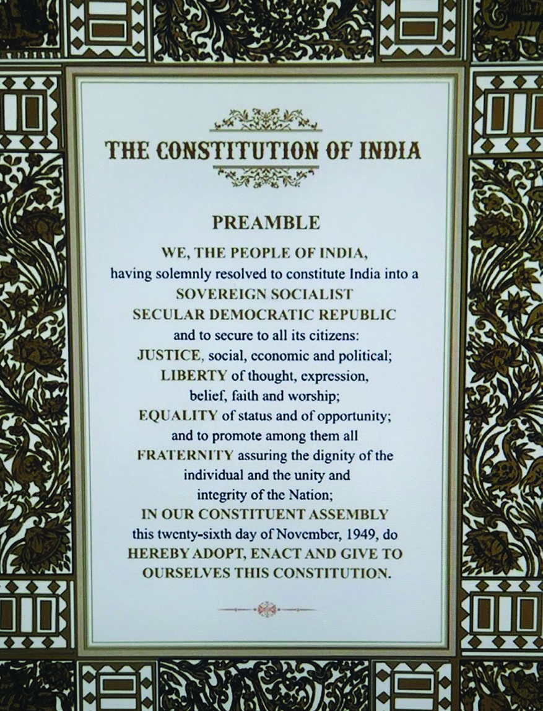

Page 26

സാമൂഹ്്യശാസ്ത്രം I
130
അധ്്യയായം 7
പ്രസ്തുത സ്ാപനങ്ങളെ ഭരണഘടനാസ്ാപനങ്ങളെന്്നുുംം ഭരണഘടനേതര
സ്ാപനങ്ങളെന്്നുുംം രണ്ായി തരംതിരിക്്കാാംം. ഭരണഘടന നിലവില് വന്ന
പ്്പപോൾത്തന്നെ രൂപീകരിക്കപ്പെട്ട സ്വയംംഭരണസ്ാപനങ്ങളാണ് ഭരണഘട
നാസ്ാപനങ്ങള്. ഭരണഘടനാസ്ാപനങ്ങളുടെ അധികാരത്തിന്റെ ഉറവിടംം
ഭരണഘടനയാണ്. ഈ സ്ാപനങ്ങളുടെ അധികാരംം, ഘടന എന്നിവയില്
മാറ്റംം വരുത്ുന്നതിന് ഭരണഘടനാഭേദഗതി അനിവാര്യവുമാണ്. എന്നാല്
പാര്ലമെന്റ് പാസാക്ുന്ന നിയമങ്ങളനുസരിച്് രൂപംം കൊ�ൊള്ുന്നവയാണ്
മുകളില് കൊ�ൊടുത്ിരിക്ുന്ന വാര്ത്തകളില് ജനാധിപത്്യത്തിന്റെ സ്ാപ
നവല്ക്കരണത്ിനായി രൂപീകരിച്ചിട്ടുള്ള വ്യത്്യസ്ത സംംവിധാനങ്ങളെയാണ്
സൂചിപ്ിച്ചിട്ടുള്ളത്. അവ ഏതെല്ലാമെന്ന്ന്ന് കണ്ടെത്താമോ�ോ?
ലോ�ോകസഭ തിരഞ്്ഞെടുപ്പ് വിജ്ാപനമായി
ന്യൂഡല്്ഹി : പതിനെട്്ടാാംം
ലോ�ോകസഭാ തിരഞ്ഞെടു
പ്ിനുള്ള
വിജ്ാപനംം
പുറപ്പെടുവിച്ു.
ഏഴ്
ഘട്ടങ്ങളിലായാണ് രാജ്യ
ത്് തിരഞ്ഞെടുപ്് തീരു
മാനിച്ിരിക്ുന്നതെന്ന്ന്ന്
കമ്ീഷൻ
അറിയിച്ു.
ഇതിന് മുന്്നനോടിയായി
വോ�ോട്ടർപട്ടിക പരിഷ്കര
ണമുൾപ്പെടെയുള്ള നടപ
ടിക്രമങ്ങളുംം കമ്ീഷൻ
ആരംംഭിച്ു.
വിദ്്യയാഭ്യാസ അവകാശം ഉറപ്പുവരുത്ും :
ദേശീയ പിന്ാക്കവിഭാഗ കമ്ീഷന്
മധ്യ പ്രദേശ് : പിന്നാക്ക വിഭാ
ഗങ്ങള്ക്്കാായി കൂടുതല്
വിദ്യയാഭ്യാസസ്ാപനങ്ങള്
ആരംംഭിക്ാൻ ശുപാര്ശ ചെ
യ്യുമെന്ന്ന്ന് ദേശീയ പിന്നാക്ക
വിഭാഗ കമ്ീഷന് പത്രസ
മ്മേളനത്ില് പറഞ്ഞു. ഈ
വിഭാഗങ്ങളുടെ സാമ്പ
ത്ിക പിന്നാക്ാവസ്ഥ
പരിഹഹ
രിക്ാനുള്ള നട
പടികളുംം ഇതിലുണ്ാ
കുമെന്ന്ന്ന് കമ്ീഷന് അറി
യിച്ു.
പട്ികജാതി - പട്ികവര്ഗ വിഭാഗങ്ങളുടെ
സാമ്പത്ിക സാമൂഹിക ഉന്നമനത്ിനായി നടപടി
ന്യൂ ഡല്്ഹി : രാജ്യത്തെ പട്ടി
കജാതി പട്ടികവര്ഗ്ഗ വിഭാ
ഗങ്ങളുടെ പുരോ�ോഗതിക്ാ
യുള്ള നടപടികള് സ്വീക
രിക്കുമെന്ന്ന്ന് ദേശീയ പട്ടിക
ജാതി കമ്ീഷനുംം ദേശീയ
പട്ടികവര്ഗ്ഗ
കമ്ീഷനുംം
അറിയിച്ു. ഈ വിഭാഗങ്ങളെ
സമൂഹഹ
ത്തിന്റെ മുഖ്്യധാരയി
ലെത്ിക്ുന്നതിനായി പാര്പ്്പി
ടങ്ങളുള്പ്്പെടെയുള്ള അടി
സ്ാന സൗകര്യങ്ങളുംം വിദ്യാ
ഭ്യാസ സൗകര്യങ്ങളുംം സംംവ
രണാനുകൂല്യങ്ങളും സമയ
ബന്ധിതമായി ലഭ്യമാക്ുന്ന
തിനുള്ള ശുപാര്ശകൾ നൽ
കുമെന്്നുുംം കമ്ീഷനുകള്
അറിയിച്ു.
ന്യൂഡല്്ഹി : തൊ�ൊഴില്
മേഖലയില് നടക്ുന്ന മനു
ഷ്യാവകാശലംംഘനങ്ങൾ
ക്കെതിരെ ദേശീയമനു
ഷ്്യാവകാശകമ്ീഷന്
സ്വമേധയാ കേസെടുത്ു.
വിവിധ മാധ്്യമങ്ങളില്
ഇതുസംംബന്ിച്ുവന്ന
വാര്ത്തകളുടെ അടിസ്ാ
നത്ിലാണ്
കമ്ീഷന്റെ
നടപടി.
മനുഷ്യയാവകാശലംഘനം : കമ്ീഷന് കേസെട
ുത്ു
സ്തീ സുരക്ാ നടപടികള് അനിവാര്യം
ന്യൂഡല്്ഹി : സ്തീകൾക്കെ
തിരെ വർധിച്ുവരുന്ന
അതിക്രമങ്ങൾ തടയുന്ന
തിന് നടപടികൾ സ്വീകരി
ക്ുവാനുംം സ്തീ സുരക്ാ
നിയമങ്ങൾ കർശനമായി
നടപ്ിലാക്ുന്നതിനുംം
സർക്ാരുകൾക്് നിർ
ദേശങ്ങൾ നൽകുമെന്ന്ന്ന്
ദേശീയ വനിതാകമ്ീ
ഷൻ അറിയിച്ു.
ന്യൂഡല്്ഹി : ന്യൂനപക്ഷ
ങ്ങള്ക്്കെതിരായ അതിക്രമ
ങ്ങളില് ദേശീയ ന്യൂനപക്ഷ
കമ്ീഷന് ആശങ്ക രേഖപ്പെ
ടുത്ി. മത-ഭാഷാ-സാംംസ്ാ
രിക ന്യൂനപക്ഷങ്ങളുടെ
അവകാശങ്ങള് സംംരക്ി
ക്ുന്നതിനായുള്ള നിര്ദ്ദേ
ശങ്ങളുംം കമ്ീഷന് മുന്്നനോ
ട്ടുവെ
ച്ു.
ന്യൂനപക്ഷാവകാശ സംരക്ഷണം :
കമ്ീഷന് ഇടപെട്ു
ദേശീയ ന്യൂനപക്ഷകമ്ീഷന്
Page 27


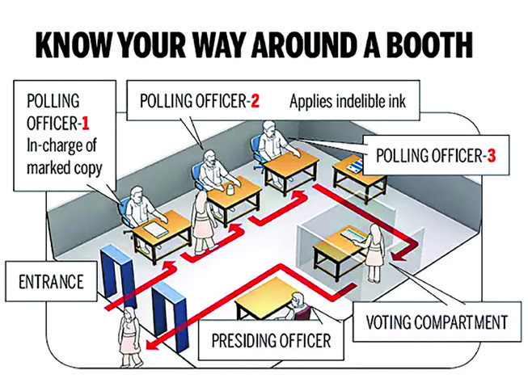

സ്റാൻഡേർഡ് IX
131
ജനാധിപത്്യത്ിന്റെ വ്്യാപനം സ്ാപനങ്ങളിലൂടെ
തിരഞ്ഞെടുപ്ുമായി ബന്ധപ്പെട്ട ചില ചിത്രങ്ങളാണ് മുകളില് കൊ�ൊടു
ത്തിട്ടുള്ളത്. ഈ ചിത്രങ്ങള് ഏതൊ�ൊക്കെ പ്രക്രിയകളെയാണ് സൂചിപ്ി
ക്ുന്നത്?
വോ�ോട്ടുചെയ്ുന്നതിനായി വരിയായി നില്ക്്കുന്നുന്നു.
ഭരണഘടനേതര സ്ാപനങ്ങള്. ഇവയ്ക്ക് പിന്നീട് ആവശ്്യാനുസരണംം ഭരണ
ഘടനാപദവി ലഭിക്ാറുണ്്.
ഭരണഘടനയുടെ അടിസ്ാനമൂല്യങ്ങളായ സമത്്വവംം, സ്വവാതന്തത്ര്്യംയം, സാമൂഹഹ
ിക
നീതി, മതേതരത്്വവംം തുടങ്ങിങ്ങിയ ആശയങ്ങള് നമ്ുടെ രാജ്യത്് പ്രായോ�ോ
ഗിക
തലത്ില് നടപ്ിലാക്ുന്നതില് ഈ സ്ാപനങ്ങള് മുഖ്്യ പങ്കുവഹഹ
ിക്ുന്നു.
രാജ്യത്തെ എല്ാവിഭാഗംം ജനങ്ങളെയുംം ഉൾച്ചേർത്തുകൊ�ൊണ്ാണ് ഈ സ്ാപ
നങ്ങൾ ജനാധിപത്്യത്തിന്റെ അടിസ്ാനലക്ഷഷ്യ്യങ്ങൾ കൈവരിക്ുന്നത്.
അരികുവൽക്കരിക്കപ്പെട്ടവരുംം ദുർബലരുമായ ജനവിഭാഗങ്ങളുടെ പങ്കാളിത്ത
ത്ിലൂടെ മാത്രമേ ജനാധിപത്്യയം വിജയംം കൈവരിക്ുകയുള്ൂ. അതിനായി
അത്തരംം വിഭാഗങ്ങളുടെ ആഗ്രഹഹ
ങ്ങളുംം അഭിലാഷങ്ങളുംം നീതിപൂർവംം പരി
ഗണിക്കപ്പെടേണ്ടതുണ്്. ഇന്ത്യയിൽ ഈ ധർമ്മംം നിർവഹഹ
ിക്ുന്നതിൽ ഭരണ
ഘടനാ-ഭരണഘടനേതര സ്ാപനങ്ങൾ സുപ്രധാന പങ്കുവഹഹ
ിക്ുന്നു.
മുകളില് സൂചിപ്പിച്ച സ്ാപനങ്ങള് എങ്ങനെയാണ് ജനാധിപത്്യത്തിന്റെ
വ്യാപനത്തെ സഹഹ
ായിക്ുന്നതെന്ന്ന്ന് പരിശോ�ോധിക്്കാാംം.
തിരഞ്്ഞെടുപ്പ് കമ്ീഷന്
Page 28
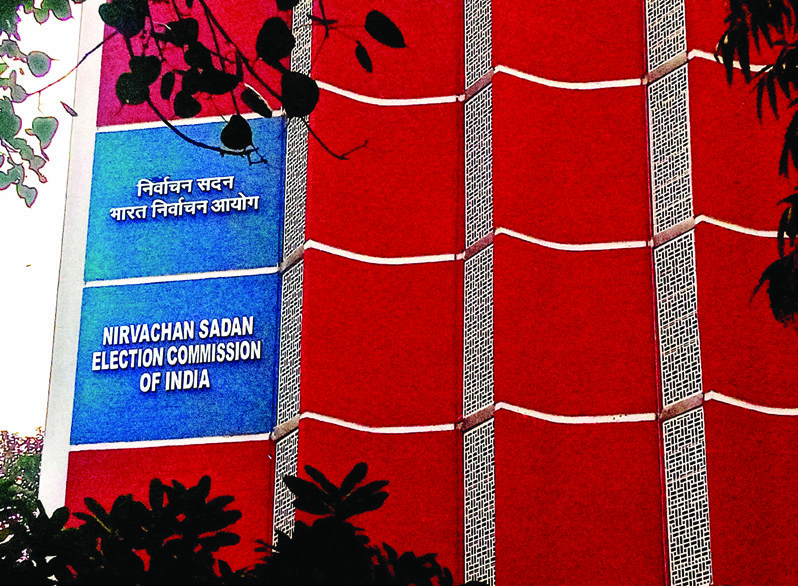

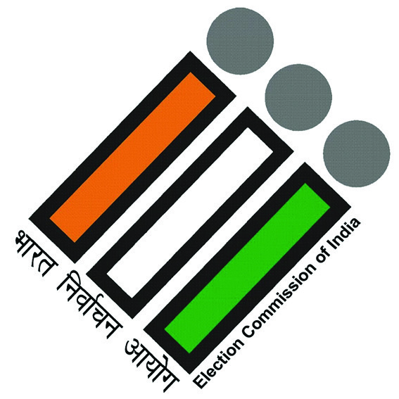
സാമൂഹ്്യശാസ്ത്രം I
132
അധ്്യയായം 7
ജനാധിപത്്യത്തിന്റെ സംംസ്ാപനത്ിനായി രൂപംകൊ�ൊണ്ട ഭരണഘടനാ
സ്ാപനമെന്ന നിലയില് തിരഞ്ഞെടുപ്് കമ്ീഷന് വളരെ സുപ്രധാനമായ
ചുമതലകളാണ് നിർവഹഹ
ിക്ുന്നത്. താഴെക്്കകൊടുത്ിരിക്ുന്ന സംംഭാഷണംം
ശ്രദ്ിക്ൂ.
തിരഞ്ഞെടുപ്് കമ്ീഷൻ ആസ്ാനംം - ന്യൂഡൽഹഹ
ി
ഇലക്ട്രോണിക്് വോ�ോട്ിംഗ്് മെഷീൻ (EVM)
ലോ�ോകത്തിലെ ഏറ്റവുംം വലിയ ജനാധിപത്്യ പ്രക്രിയയാണ് ഇന്ത്യയിലെ തിരഞ്ഞെടുപ്്. തിരഞ്ഞെ
ടുപ്് പ്രക്രിയ കൂടുതൽ സുതാര്യമാക്ുന്നതിനുംം തിരഞ്ഞെടുപ്് കുറ്റകൃത്്യങ്ങൾ തടയുന്നതിനുംം
തിരഞ്ഞെടുപ്് കമ്ീഷൻ നടപ്ിലാക്ിയ സംംവിധാനമാണ് ഇലക്ട്രരോണിക് വോ�ോട്്ടിിംംഗ് മെഷീൻ
(EVM). 1982-ൽ കേരളത്തിലെ പറവൂർ നിയമസഭാമണ്ഡലത്തിലേക്കുള്ള ഉപതിരഞ്ഞെടു
പ്ിലാണ് ആദ്യമായി ഇലക്ട്രരോണിക് വോ�ോട്്ടിിംംഗ് മെഷീൻ പരീക്ഷിച്ചത്. 2004-ലെ പാർലമെന്റ്
തിരഞ്ഞെടുപ്ിൽ 543 മണ്ഡലങ്ങളിലുംം ഇ.വി.എംം. ഉപയോ�ോഗിച്ു. ഇലക്ട്രരോണിക് വോ�ോട്്ടിിംംഗ്
മെഷീനിൽ കൺട്രരോൾ യൂണിറ്റ്, ബാലറ്റ് യൂണിറ്റ് എന്നീ രണ്് യൂണിറ്റുകളാണുള്ളത്. സുതാര്യത
ഉറപ്ു വരുത്ുന്നതിനായി വോ�ോട്ടർ വെരിഫൈഡ് പേപ്പർ ഓഡിറ്റ് ്രയൽ (VVPAT) സംംവിധാനവുംം
ഉൾപ്പെടുത്ിയിട്ടുണ്്. തിരഞ്ഞെടുപ്് പ്രക്രിയയുടെ വേഗത വർധിപ്ിക്ുന്നതിനുംം ഫലപ്രഖ്്യാ
പനംം വേഗത്ിലാക്ാനുംം തിരഞ്ഞെടുപ്് ചിലവുകൾ കുറയ്കാനുംം ഇലക്ട്രരോണിക് വോ�ോട്്ടിിംംഗ്
മെഷീൻ സഹഹ
ായിക്ുന്നു.
ജനാധിപത്്യഭരണക്രമത്ില് തിരഞ്ഞെടുപ്ുകള്ക്്ക്
നിര്ണ്
ായക പങ്കാണുള്ളത് എന്നറിയാമല്്ലലോ? ജനാ
ധിപത്്യ ഭരണസംംവിധാനത്ിൽ ജനപ്രതിനിധികളുംം
ഭരണാധികാരികളുംം അധികാരത്തിലെത്ുന്നത് തിര
ഞ്ഞെടുപ്ുകളിലൂടെയാണ്. അതുകൊ�ൊണ്് തന്നെ
നീതിപൂർവവുംം
നിഷ്പക്ഷവുമായ
തിരഞ്ഞെടുപ്്
ഉറപ്ുവരുത്ുന്നതിന് സ്വതന്ത്രവുംം ആധികാരികവു
മായ ഒരു സംംവിധാനംം അനിവാര്യമാണ്. ഇന്ത്യ
യില് ഈ ഉത്തരവാദിത്്വവംം നിർവഹഹ
ിക്ുന്ന ഭരണ
ഘടനാസ്ാപനമാണ് തിരഞ്ഞെടുപ്്പ്് കമ്ീഷന്
(Election Commission of India).
ഭരണഘടനയുടെ അനുച്ഛേദംം 324 പ്രകാരംം 1950
ജനുവരി 25നാണ് ഇന്ത്യൻ തിരഞ്ഞെടുപ്് കമ്ീഷൻ നിലവിൽ
വന്നത്. മുഖ്്യതിരഞ്ഞെടുപ്് കമ്ീഷണറുംം രണ്് കമ്ീഷണർ
മാരുംം ചേര്ന്നതാണ് നിലവിലെ തിരഞ്ഞെടുപ്് കമ്ീഷന്.
രാഷ്ട്രപതിയാണ് ഇവരെ നിയമിക്ുന്നത്. ആറുവര്ഷമോ�ോ അല്ലെ
ങ്കില് അറുപത്ിയഞ്് വയസ്ുവരെയോ�ോ ആണ് കമ്ീഷന്
അംംഗങ്ങളുടെ ഔദ്യോഗികകാലാവധി. ഇംംപീച്്ച്മമെന്റിലൂടെ
മാത്രമേ മുഖ്്യതിരഞ്ഞെടുപ്് കമ്ീഷണറെ തല്സ്്ഥാനത്ു
നിന്്നുുംം നീക്കംം ചെയ്ാൻ സാധിക്ൂ. കേന്ദ്രഭരണപ്രദേശങ്ങ
ളിലുംം സംംസ്ാനങ്ങളിലുംം തിരഞ്ഞെടുപ്് കമ്ീഷന്റെ പ്രവര്ത്ത
നങ്ങള് ഏകോ�ോപിപ്ിക്ുന്നത് ചീഫ് ഇലക്ടറല് ഓഫീസര്മാരാണ്.
Page 29
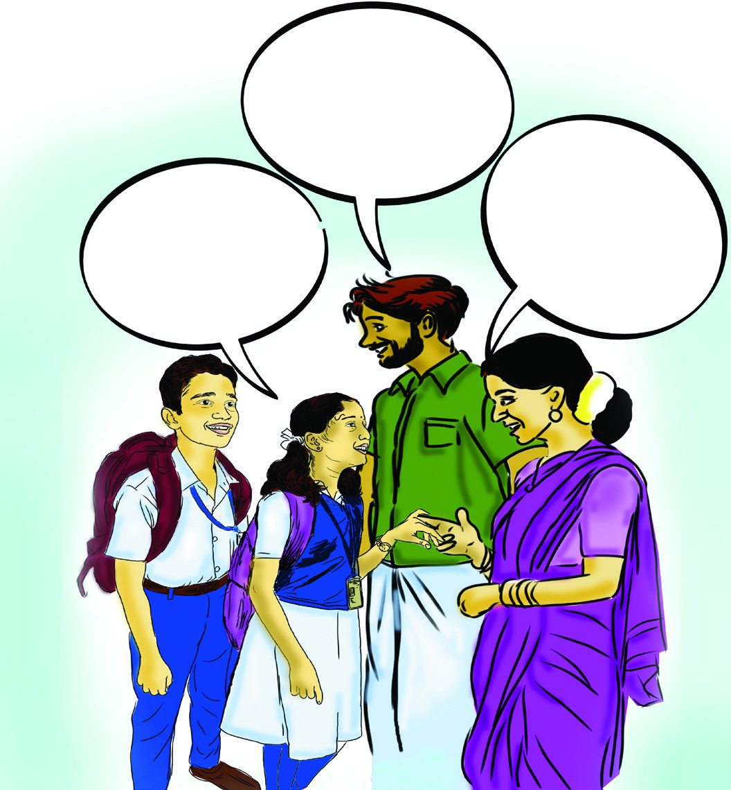

സ്റാൻഡേർഡ് IX
133
ജനാധിപത്്യത്ിന്റെ വ്്യാപനം സ്ാപനങ്ങളിലൂടെ
എനിക്് ഈ
ലോ�ോകസഭാ
തിരഞ്ഞെടുപ്ിൽ
വോ�ോട്ട്ട്ട് ചെയ്ാൻ
പറ്റുമോ�ോ
?
ഇല്ല. വോ�ോട്ടർ
പട്ടികയിൽ പേര്
ചേർക്ുന്നതിന് 18
വയസ് പൂർത്ി
യാകണംം
നമ്ുടെ
രാജ്യത്് വോ�ോട്ടർ
പട്ടിക തയ്ാറാക്ു
ന്നതുംം തിരിച്ചറിയൽ
കാർഡ് ലഭ്യമാക്ു
ന്നതുംം തിരഞ്ഞെടുപ്്
കമ്ീഷനാണ്.
നമ്ുടെ രാജ്യത്് വോ�ോട്ടര്പട്ടിക തയ്ാറാ
ക്ുന്നതുംം വോ�ോട്ടർമാർക്് തിരിച്ചറിയല്
കാര്ഡ് നൽകുന്നതുംം തിരഞ്ഞെടുപ്് കമ്ീ
ഷനാണെന്ന്ന്ന് സംംഭാഷണത്ില് നിന്്നുുംം
വ്യക്തമായല്്ലലോ? മറ്റെന്്തതൊക്കെ ചുമതലക
ളാണ് തിരഞ്ഞെടുപ്് കമ്ീഷന് നിർവഹഹ
ി
ക്ാനുള്ളതെന്ന്ന്ന് നമുക്് പരിശോ�ോധിക്്കാാംം.
ഇംപീച്്ച്മമെന്റ്്
(Impeachment)
ഭരണഘടനാപദവികളിൽ ഇരി
ക്കുന്ന വ്്യക്ികളെ പ്രസ്തുുത
സ്ാനങ്ങളിൽ നിന്്നുുംം പാർല
മെന്ററി നടപടിക്രമങ്ങളിലൂടെ പുുറ
ത്ാക്കുന്ന പ്രക്രിയയാണ് ഇംംപീ
ച്്ച്മമെന്റ്ന്റ്.
വോ�ോട്ടര് പട്ടിക തയ്ാറാക്കല്, തിരിച്ചറിയല് കാര്ഡ്
ലഭ്യമാക്കല്
രാഷ്ട്രപതി, ഉപരാഷ്ട്രപതി, ലോ�ോകസഭ – രാജ്യസഭ –
സംംസ്ാന നിയമസഭാംംഗങ്ങള് എന്നിവരുടെ
തിരഞ്ഞെടുപ്ിനുള്ള മേല്്നനോട്ടംം, നടത്ിപ്്,
നിയന്ത്രണംം.
പെരുമാറ്റച്ചട്ടങ്ങളുടെ പ്രഖ്്യാപനവുംം നടപ്ിലാക്കലുംം.
രാഷ്ട്രീയപ്പാര്ട്്ടി്ടികള്ക്്ക് അംംഗീകാരംം നല്കലുംം ചിഹ്നംം
അനുവദിക്കലുംം.
തിരഞ്ഞെടുപ്് വിജ്ാപനംം പുറപ്പെടുവിക്കല്,
നാമനിർദേശപത്രിക സ്വീകരിക്കല്, സൂക്്ഷ്്മ
പരിശോ�ോധന, നാമനിർദേശപത്രിക അംംഗീകരിക്കല്,
സ്ാനാർഥിപട്ടിക പ്രസിദ്ീകരിക്കല്.
വോ�ോട്ടെടുപ്്, വോ�ോട്ടെണ്ണല് തീയതികള് നിശ്ചയിക്കല്,
ഫലപ്രഖ്്യാപനവുംം തര്ക്കങ്ങള് പരിഹഹ
രിക്കലുംം
തിരഞ്ഞെടുപ്് ചെലവ് പരിശോ�ോധിക്കലുംം തുടർ
നടപടികൾ സ്വീകരിക്കലുംം
തിരഞ്്ഞെടുപ്പ് കമ്ീഷൻ - ചുമതലകള്
തിരഞ്ഞെടുുപ്് കമ്ീഷന്റെ ചുുമതലകൾ,
ഉത്തരവാദിത്വങ്ങൾ, തുുടങ്ങിയവ നിർ
വചിക്കുന്നതിനുംം വിപുുലവുംം സങ്ീർ
ണവുുമായ തിരഞ്ഞെടുുപ്് സംംവിധാനംം
കാര്യക്ഷമവുംം ബഹുുജനപങ്ാളിത്തമുു
ള്ളതുുമാക്ി മാറ്റുുന്നതിനുംം സുുസംംഘടി
തമായ നിയമങ്ങളാണ് നമ്മുടെ രാജ്യ
ത്തുുള്ളത്. 1950-ലെയുംം 1951-ലെയുംം
ജനപ്രാതിനിധ്യനിയമങ്ങൾ ഈ ധർമ്മ
ങ്ങളാണ് നിർവഹിക്കുന്നത്. ഇന്ത്യൻ ഭര
ണഘടനയിലെ 327-ാംം വകുുപ്് അനുുസ
രിച്ാണ് ഈ നിയമങ്ങൾ പാർലമെന്റ്ന്റ്
പാസാക്ിയിട്ടുുള്ളത്. തിരഞ്ഞെടുുപ്്
പ്രക്രിയ വിശദമായിത്തന്നെ ഈ നിയമ
ങ്ങളിൽ വ്യക്തമാക്ിയിട്ടുുണ്്. നാമനിർ
ദേശപത്ിക സ്വീകരിക്കുന്നതുുമുുതൽ
ഫലപ്രഖ്്യാപനംം വരെയുുള്ള എല്ാ ഘട്ട
ങ്ങളുംം ഇതിൽ വ്യവസ്ഥ ചെയ്യുന്നുു.
നമുുക്് ഈ നിയമങ്ങൾ പരിചയപ്പെടാംം.
Page 30


സാമൂഹ്്യശാസ്ത്രം I
134
അധ്്യയായം 7
ഇന്ത്യന് തിരഞ്ഞെടുപ്് കമ്ീഷണര്മാരുടെ പേരുംം കാലഘട്ടവുംം ഉള്പ്്പെടുന്ന
ഡിജിറ്റൽ ആൽബംം തയ്ാറാക്ുക.
തിരഞ്ഞെടുപ്് കമ്ീഷന്റെ പ്രവര്ത്തനങ്ങളെക്ുറിച്ചുള്ള കൂടുതല് വിവര
ങ്ങള് ശേഖരിക്ുക.
ദേശീയ സമ്മതിദായക
ദിനം (National Voters Day)
ജനുവരി 25 ആണ് ദേശീയ
സമ്മതിദായകദിനമായി ആചരി
ക്ുന്നത്. 2011 മുതലാണ് ഈ
ദിനംം ആചരിച്് തുടങ്ങിങ്ങിയത്.
1950 ജനുവരി 25ന് ആയിരുന്നു
തിരഞ്ഞെടുപ്് കമ്ീഷന് നില
വില് വന്നത്. തിരഞ്ഞെടുപ്് കമ്ീ
ഷന്റെ സ്ാപകദിനംം എന്ന നില
യിലാണ് ജനുവരി 25 ദേശീയ
സമ്മതിദായകദിനമായി ആചരി
ക്ാന് തീരുമാനിച്ചത്. രാജ്യത്തെ
എല്ാ വോ�ോട്ടര്്മമാരെയുംം തിരഞ്ഞെ
ടുപ്് പ്രക്രിയയില് സജീവ പങ്കാ
ളിയാക്ുന്നതിനുംം സമ്മതിദാനാ
വകാശംം
വിനിയോ�ോഗിക്ുന്നത്
പ്്രരോത്സാഹഹിപ്ിക്ുന്നതിനുമായാണ്
ദേശീയ സമ്മതിദായകദിനംം ആച
രിക്ുന്നത്.
ജനപ്രാതിനിധ്യനിയമം - 1950 (Representation of People Act - 1950)
പാർലമെന്റിലെയുംം സംംസ്ാന നിയമസഭകളിലെയുംം തിര
ഞ്ഞെടുപ്ുകളിലേക്കുള്ള നിയോ�ോജക മണ്ഡലങ്ങൾ നിശ്ച
യിക്ുന്നതിനുംം അവയുടെ അതിർത്ി പുനർനിർണ്ണയി
ക്ുന്നതിനുംം വോ�ോട്ടർപട്ടിക തയ്ാറാക്ുന്നതിനുമുള്ള വ്യവ
സ്ഥകൾ ക്്രരോഡീകരിക്ുന്ന നിയമമാണ് 1950-ലെ ജനപ്രാ
തിനിധ്യനിയമംം. എല്ാ പാർലമെന്റ് മണ്ഡലങ്ങളുംം ഏകാംംഗ
മണ്ഡലങ്ങളാണെന്ന്ന്ന് ഈ നിയമംം അനുശാസിക്ുന്നു. നിയോ�ോ
ജകമണ്ഡലങ്ങളുടെ വിഭജനംം, പുനർനിർണ്ണയംം, മുഖ്്യതിര
ഞ്ഞെടുപ്് ഓഫീസർ, ജില്ലാതിരഞ്ഞെടുപ്് ഓഫീസർമാർ,
വോ�ോട്ടർപട്ടിക തയ്ാറാക്ുന്നതിനുള്ള ഇലക്ടറൽ രജിസ്ട്രരേ
ഷൻ ഓഫീസർമാർ എന്നിവരുടെ നിയമനംം, വോ�ോട്ടർപട്ടിക
തയ്ാറാക്കൽ തുടങ്ങിങ്ങിയ കാര്യങ്ങൾ ഈ നിയമംം വ്യവസ്ഥ
ചെയ്ുന്നു.
ജനപ്രാതിനിധ്യനിയമം - 1951 (Representation of
People Act - 1951)
ഇന്ത്യൻ പാർലമെന്റിലേക്്കുുംം സംംസ്ാന നിയമസഭകളി
ലേക്്കുുംം തിരഞ്ഞെടുപ്് നടത്ുന്നതിനുംം തിരഞ്ഞെടുക്കപ്പെട്ട
വരുടെ യോ�ോഗ്യതയുംം അയോ�ോഗ്യതയുംം നിർണ്ണയിക്ുന്നതിനുംം
തിരഞ്ഞെടുപ്് തർക്കങ്ങൾക്കുള്ള പരിഹഹ
ാരങ്ങൾ വ്യവസ്ഥ
ചെയ്ുന്നതിനുമുള്ള നിയമമാണ് 1951-ലെ ജനപ്രാതിനിധ്യ
നിയമംം. ഈ നിയമത്ിൽ തിരഞ്ഞെടുപ്ുമായി ബന്ധപ്പെട്ട
കുറ്റകൃത്്യങ്ങൾ, പാർലമെന്റ് അംംഗങ്ങളുടെ യോ�ോഗ്യതകൾ,
അയോ�ോഗ്യതകൾ എന്നിവയെക്ുറിച്് പ്രതിപാദിക്ുന്നു. പാർലമെന്റിലെയുംം
സംംസ്ാന നിയമസഭകളിലെയുംം അംംഗങ്ങളെ അയോ�ോഗ്യരാക്ുന്നതിനെക്ുറിച്്ചുുംം
തിരഞ്ഞെടുപ്് സംംവിധാനത്തെക്ുറിച്്ചുുംം മുഖ്്യതിരഞ്ഞെടുപ്് കമ്ീഷണർ, ജില്ാ
തിരഞ്ഞെടുപ്് ഓഫീസർ, തിരഞ്ഞെടുപ്് നിരീക്ഷകർ, റിട്ടേണിംംഗ് ഓഫീസർമാർ
എന്നിവരുടെ ചുമതലകളുംം യോ�ോഗ്യതകളുംം ഈ നിയമത്ിൽ നിർവചിച്ിരിക്ുന്നു.
രാഷ്ട്രീയപാർട്ടികളുടെ രജിസ്ട്രരേഷനെക്ുറിച്്ചുുംം ഈ നിയമത്ിൽ പ്രതിപാദിക്ുന്നു.
ഈ നിയമപ്രകാരംം ഏത് സംംഘടനയ്കക്കകുംം രാഷ്ട്രീയപാർട്ടിയായി മാറണമെങ്കിങ്കിൽ
തിരഞ്ഞെടുപ്് കമ്ീഷനിൽ രജിസ്റ്റർ ചെയ്യേണ്ടതുണ്്. ദേശീയ പാർട്ടി, പ്രാദേശ
ിക
പാർട്ടി എന്നീ പദവികൾക്കുള്ള മാനദണ്ഡങ്ങളുംം തിരഞ്ഞെടുപ്ുചിഹ്നങ്ങൾ ലഭി
ക്ാനുള്ള മാനദണ്ഡങ്ങളുംം ഈ നിയമത്ിൽ വ്യവസ്ഥചെയ്ുന്നു.
പൗരരുടെ വോ�ോട്ടവകാശംം വിനിയോ�ോഗിക്ുവാൻ ബൂത്ുകളിലെത്ി മാത്രമാണോ�ോ വോ�ോട്ടുട്ടു
ചെയ്ാൻ സാധിക്ുക? മറ്റെന്തെങ്കിങ്കിലുംം സംംവിധാനംം തിരഞ്ഞെടുപ്് കമ്ീഷൻ നടപ്ിലാ
ക്ിയിട്ടുണ്്ടടോ? ക്ാസിൽ ഒരു ചർച്ച സംംഘടിപ്ിക്ുക.
Page 31


സ്റാൻഡേർഡ് IX
135
ജനാധിപത്്യത്ിന്റെ വ്്യാപനം സ്ാപനങ്ങളിലൂടെ
സംസ്ാന തിരഞ്്ഞെടുപ്പ് കമ്ീഷന്
കേന്ദ്ര തിരഞ്ഞെടുുപ്് കമ്ീഷനെ കൂടാതെ ഓരോ�ോ സംംസ്ാനങ്ങളിലുംം സംംസ്ാനതല തിര
ഞ്ഞെടുുപ്് കമ്ീഷനുുകളുുണ്്. 73, 74 ഭരണഘടനാഭേദഗതികളിലൂടെ സംംസ്ാനങ്ങളില് തിര
ഞ്ഞെടുുപ്് കമ്ീഷനുുകള് നിലവില് വന്നുു. ഭരണഘടനയുടെ 243 (K) / 243 (Z A), എന്നീ അനുു
ഛേദങ്ങൾ
പ്രകാരമാണിത്
രൂപീകരിച്ിട്ടുുള്ളത്.
തദ്ദേശസ്വയംംഭരണസ്ാപനങ്ങളിലേക്കുള്ള
വോ�ോട്ടര് പട്ിക തയ്ാറാക്കല്, തിരഞ്ഞെടുുപ്ിനുുള്ള മേല്്നനോട്ടവുംം നിയന്ത്രണവുംം തുുടങ്ങിയ
ചുുമതലകള് സംംസ്ാന തിരഞ്ഞെടുുപ്് കമ്ീഷനുുകള് നിര്വ്വഹിക്കുന്നുു. തദ്ദേശസ്വയംംഭരണസ്ാ
പനങ്ങളിലെ അംംഗങ്ങളുടെ സംംവരണസ്ാനങ്ങള് നിശ്ചയിക്കുന്നതുംം കമ്ീഷനാണ്. കേരള
സംംസ്ാന തിരഞ്ഞെടുുപ്് കമ്ീഷന് നിലവില് വന്നത് 1993 ഡിസംംബര് 3നാണ്.
ഇന്തത്യയെപ്്പപോലെ വൈവിധ്യങ്ങളാല് സമ്പന്നമായതുംം
ഉയര്ന്ന ജനസംംഖ്്യയുള്ളതുമായ രാജ്യത്് ജനാധിപത്്യഭ
രണക്രമംം രൂപപ്പെടുത്ുന്നതില് തിരഞ്ഞെടുപ്് കമ്ീഷന്
സുപ്രധാന പങ്കാണുള്ളത്. സാമൂഹഹ
ികംം, സാമ്പത്ികംം,
ലിംംഗപരംം തുടങ്ങിങ്ങിയ അസമത്്വങ്ങളാല് സമൂഹഹ
ത്തിന്റെ
മുഖ്്യധാരയില് നിന്്നുുംം മാറ്റിനിര്ത്തപ്പെട്ട നിരവധി ജനവി
ഭാഗങ്ങള് നമ്ുടെ സമൂഹഹ
ത്ില് ഉണ്ായിരുന്നു. ഇത്തരംം
ജനവിഭാഗങ്ങളെ തിരഞ്ഞെടുപ്് എന്ന പ്രക്രിയയുടെ
ഭാഗമാക്ുക വഴി ഇന്ത്യൻ ജനാധിപത്്യത്തിന്റെ രാഷ്ട്രീയ
അടിത്തറയുറപ്ിക്ുക എന്ന കര്ത്തവ്യമാണ് തിരഞ്ഞെ
ടുപ്് കമ്ീഷന് നിർവഹഹ
ിച്ചിട്ടുള്ളത്. രാജ്യത്തിലെ വിവിധ
തലങ്ങളിലുള്ള തിരഞ്ഞെടുപ്ുകളുടെ സുതാര്യവുംം
നീതിയുക്തവുമായ നിർവഹഹ
ണത്ിലൂടെ ഈ ഭരണഘടനാ
സ്ാപനത്തെ ജനാധിപത്്യപരമായി കൂടുതല് ശക്തവുംം
അർഥപൂര്ണ്ണവുമാക്ുന്നു.
ദേശീയ മനുഷ്യയാവകാശകമ്ീഷന്
തന്നിന്നിരിക്ുന്ന കലണ്ടറിലെ
തീയതി ശ്രദ്ിച്ുവല്്ലലോ? ഈ
ദിവസത്തിന്റെ പ്രത്്യയേകതയെ
ന്തെന്ന്ന്ന് കണ്ടെത്താമോ�ോ?
സുകുമാർ സെൻ ആയിരുന്നു
ഇന്ത്യയിലെ ആദ്യത്തെ മുഖ്്യ
തിരഞ്ഞെടുപ്് കമ്ീഷണർ.
Page 32

സാമൂഹ്്യശാസ്ത്രം I
136
അധ്്യയായം 7
മനുഷ്്യാവകാശലംംഘനങ്ങള് നമ്മുടെ ഭരണഘടന
ഉറപ്പുുനല്്കകകുന്ന പൗരാവകാശങ്ങളുടെയുംം മൂല്യങ്ങ
ളുടെയുംം നിഷേധമാണ്. നമ്മുടെ രാജ്യത്് മനുഷ്്യാ
വകാശലംംഘനങ്ങള്
ഇല്ാതാക്ി
പൗരാവകാശ
സംംരക്ഷണംം ഉറപ്പുുവരുുത്തുുക എന്ന ലക്ഷഷ്യത്്തതോടെ
രൂപീകരിക്കപ്പെട്ട സ്ാപനമാണ് ദേശീയ മനുഷ്്യാ
വകാശ കമ്ീഷന്. 1993 ഒക്ടടോബര് 12ന് ആണ് ദേശീയ
മനുഷ്്യാവകാശ കമ്ീഷന് നിലവില് വന്നത്. ന്യയൂഡൽ
ഹിയാണ് കമ്ീഷന്റെ ആസ്ാനംം. ചെയർപേഴ്സൺ
ഉൾപ്പെടെ ആറ് അംംഗങ്ങളാണ് കമ്ീഷനുുള്ളത്. വിര
മിച്ച സുപ്്രീീംം കോ�ോടതി ചീഫ് ജസ്റിസ്/സുപ്്രീീംകോ�ോടതി
ജഡ്ജി ആയിരിക്്കുുംം അധ്യക്ഷന്. രാഷ്ട്രപതിയാണ്
കമ്ീഷന് അംംഗങ്ങളെ നിയമിക്കുന്നത്. മൂന്നുു വർഷംം
അല്ലെങ്ില് എഴുുപതുുവയസ്് വരെയാണ് കമ്ീഷൻ
അംംഗങ്ങളുടെ ഔദ്യോഗിക കാലാവധി.
സ്ൂളില് സാമൂഹ്്യശാസ്ത്ര ക്ലബ്ബിന്റെ നേതൃത്്വത്ില് അന്തര് ദേശീയ
മനുഷ്യാവകാശദിനംം
ആചരിക്ുന്നതിനുള്ള
തയ്യാറെടുപ്ുകള്
നടത്ുമല്്ലലോ? എന്്തതൊക്കെ പരിപാടികളായിരിക്്കുുംം അതുമായി ബന്ധപ്പെട്ട്ട്ട്
ആസൂത്രണംം ചെയ്ുക?
പോ�ോസ്റ്റര് പ്രദര്ശനംം
സെമിനാര്
യുദ്ധങ്ങള്, ആഭ്യന്തര കലാപങ്ങള്, ഭീകരാക്രമണങ്ങള് തുടങ്ങിങ്ങിയ സാഹഹ
ചര്യങ്ങളില്
മനുഷ്യന്റെ അന്തസ്ുറ്റ ജീവിതംം ദുഃസഹഹ
മാകുന്ന നിരവധി വാര്ത്തകള് ലോ�ോകത്തിന്റെ
വിവിധ ഭാഗങ്ങളില് നിന്്നുുംം മാധ്യമങ്ങളിലൂടെ നമ്മള് അറിയാറുണ്ടല്്ലലോ. നമുക്ുചുറ്്റുുംം
ഇത്തരംം മനുഷ്യാവകാശലംംഘനങ്ങള് നടക്ുന്നതായി നിങ്ങള്ക്കറിയാമോ�ോ? അത്തരംം
സംംഭവങ്ങൾ നിങ്ങളുടെ ശ്രദ്ധയില്പ്്പെട്ടിട്ടുണ്്ടടോ? ഉണ്ടെങ്കിങ്കിൽ പട്ടികപ്പെടുത്ുക.
കുട്ടികള്ക്്കെതിരായ വിവേചനംം
സ്തീകള്ക്്കെതിരായ വിവേചനംം.
Page 33
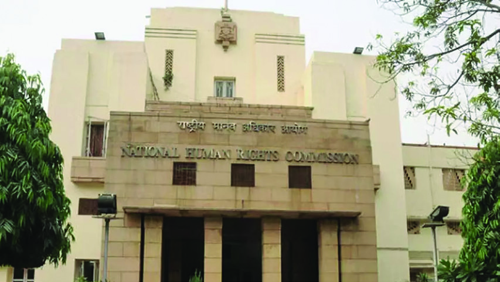


സ്റാൻഡേർഡ് IX
137
ജനാധിപത്്യത്ിന്റെ വ്്യാപനം സ്ാപനങ്ങളിലൂടെ
ദേശീയ മനുഷ്യാവകാശ കമ്ീഷൻ ആസ്ാനംം - ന്യൂഡൽഹഹ
ി
മനുഷ്യയാവകാശ സംരക്ഷണ നിയമം - 1993
മനുഷ്യാവകാശ സംംരക്ഷണത്ിനുംം അനുബ
ന്ധകാര്യങ്ങൾക്ുമായി ദേശീയ-സംംസ്ാന തല
ങ്ങളിൽ മനുഷ്യാവകാശ കമ്ീഷനുകളുംം കോ�ോട
തികളുംം സ്ാപിക്ാൻ നിർദേശിച്ചുകൊ�ൊണ്്
നിലവിൽ വന്ന നിയമമാണ് മനുഷ്യാവകാശ സംംര
ക്ഷണ നിയമംം. 1993 സെപ്തംംബർ 28ന് ആണ്
നിയമംം പ്രാബല്യത്ിൽ വന്നത്. ഇത് പ്രകാരമാണ്
ദേശീയ സംംസ്ാനതലങ്ങളിൽ മനുഷ്യാവകാശ
കമ്ീഷനുകൾ പ്രവർത്ിക്ുന്നത്. ഈ നിയമ
ത്ിൽ മനുഷ്യാവകാശകോ�ോടതി, ദേശീയ ന്യൂന
പക്ഷ കമ്ീഷൻ, ദേശീയ പട്ടികജാതി കമ്ീ
ഷൻ, ദേശീയ വനിതാ കമ്ീഷൻ, സംംസ്ാന
മനുഷ്യാവകാശ കമ്ീഷൻ എന്നിവ നിർവചിച്ി
രിക്ുന്നു. ദേശീയ മനുഷ്യാവകാശ കമ്ീഷൻ്റെ
രൂപീകരണംം, ചെയർപേഴ്സൺ ഉൾപ്പെടെയുള്ള
അംംഗങ്ങളുടെ നിയമനംം, നീക്കംചെയ്യൽ, കാലാ
വധി, കമ്ീഷൻ്റെ പ്രവർത്തനങ്ങൾ, അധികാര
ങ്ങൾ തുടങ്ങിങ്ങിയവ ഈ നിയമത്ിൽ പ്രതിപാ
ദിക്ുന്നു.
കമ്ീഷന്റെ അന്്വവേഷണ നടപടിക്രമംം, റിപ്്പപോർട്ട്
സമർപ്പിക്കൽ, സംംസ്ാന മനുഷ്യാവകാശ
കമ്ീഷൻ്റെ രൂപീകരണംം, പ്രവർത്തന അന്്വവേ
ഷണ നടപടിക്രമങ്ങൾ എന്നിവയുംം ഈ
നിയമത്ിൽ നിഷ്കർഷിക്ുന്നു. ജീവനുംം
സ്വവാതന്ത്്ര്യ്യത്ിനുംം തുല്യപരിഗണനയ്കക്കകുംം അന്തസ്ി
നുംം വേണ്ി ഭരണഘടന ഉറപ്ാക്ിയിട്ടുള്ളതോ�ോ
ഇന്ത്യ അംംഗീകരിച്ച അന്തർദേശീയ ഉടമ്പടികൾ
പ്രകാരംം നടപ്ിൽ വരുത്ാവുന്നതോ�ോ ആയ അവ
കാശങ്ങളാണ് മനുഷ്യാവകാശങ്ങൾ.
ദേശീയ മനുഷ്യയാവകാശ കമ്ീഷന്റെ
ചുമതലകൾ
മനുഷ്യയാവകാശലംഘനം സംബന്ധിച്ച
പരാതികളിൽ അന്്വേഷണം നടത്ുക.
മനുഷ്യയാവകാശ പരിരക്ാസംവിധാനങ്ങ
ളുടെ നിർവഹണവും ഫലപ്ാപ്ിയും വില
യിരുത്ി നിർദേശങ്ങൾ നൽകുക.
മനുഷ്യയാവകാശത്തെ സംബന്ധിച്ച അന്തർ
ദേശീയ കരാറുകൾ, പ്രഖ്്യാപനങ്ങൾ
തുടങ്ങിങ്ങിയവ വിശകലനം ചെയ്ത്്
നടപടികൾ സ്്വവീകരിക്കുക.
നിയമപാലകർ ഉൾപ്പെടെയുള്ള പൊ�ൊതുസേവ
കരുടെ ഭാഗത്ുനിന്ന്് ഉണ്ാകുന്ന മനുഷ്യാ
വകാശ ലംഘനങ്ങളും ഇവ തടയുന്നതിൽ
വരുത്തുന്ന വീഴ്്ചകളും പരിശോ�ോധിച്ച്്
നടപടികൾ സ്്വവീകരിക്കുക.
ജയിലുകൾ, പുനരധിവാസകേന്ദ്രങ്ങൾ
മുതലായവ സന്ദർശിച്ച്് പരിഷ്്കരണ
നിർദേശങ്ങൾ സമർപ്ിക്കുക.
മനുഷ്യയാവകാശലംഘനം സംബന്ധിച്ച
കോ�ോടതി നടപടികളിൽ കക്ഷിചേരുക.
ദേശീയ മനുഷ്യാവകാശ കമ്ീഷന്റെ പ്രധാന ചുമതലകളിൽ ചിലതാണ്
മുകളിൽ നൽകിയിരിക്ുന്നത്. കമ്ീഷന്റെ ചുമതലകളുടെ നിർവഹഹ
ണവു
മായി ബന്ധപ്പെട്ട പത്രവാർത്തകൾ ശേഖരിക്ുക.
ശേഖരിച്ച വാർത്തകൾ ചേർത്് ഒരു ഡിജിറ്റൽ ആൽബംം തയ്ാറാക്ുക.
Page 34

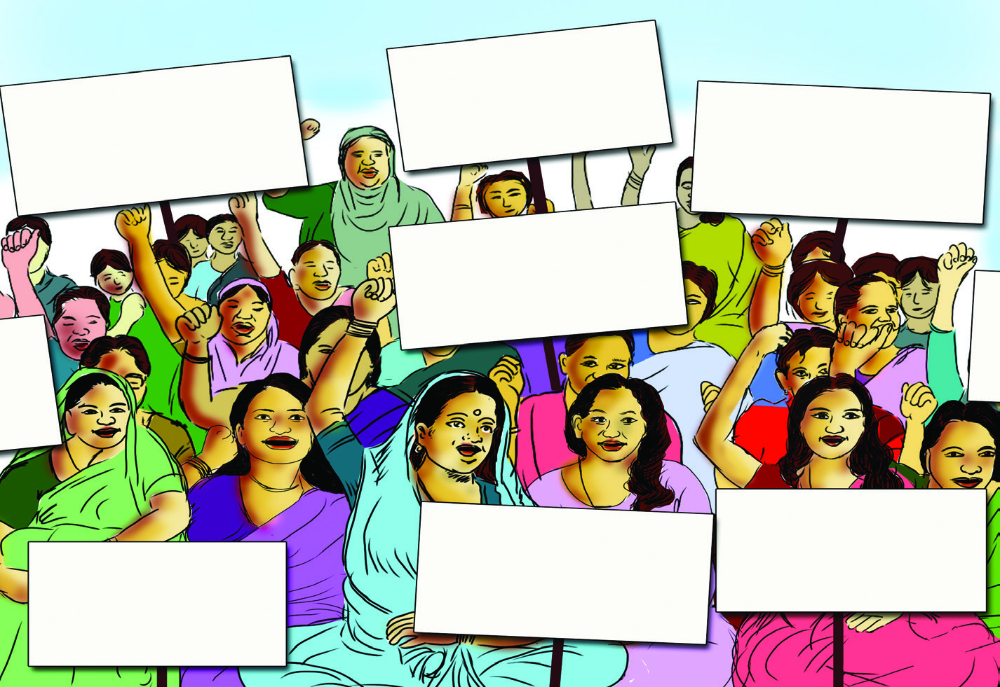
സാമൂഹ്്യശാസ്ത്രം I
138
അധ്്യയായം 7
ജനാധിപത്്യവ്യവസ്ഥയില് മനുഷ്യാവകാശങ്ങള്ക്്ക് നിസ്ുലമായ സ്ാനമാ
ണുള്ളത്. മനുഷ്യനെന്ന നിലയില് അന്തസ്്സസോടെയുംം അഭിമാനത്്തതോടെയുംം
സ്വന്തംം അവകാശങ്ങള് വിനിയോ�ോഗിക്ാന് സാധിക്കുമ്്പപോഴാണ് ജനാധിപത്്യ
സംംവിധാനംം പൂര്ണ്ണവുംം അർഥവത്ുമാകുന്നത്. പൗരരുടെ മനുഷ്യാവകാശ
ങ്ങള് സംംരക്ിച്് അതിലൂടെ ജനാധിപത്്യത്തിന്റെ വ്യാപനംം ഉറപ്ാക്ുന്ന
തിൽ ദേശീയ മനുഷ്യാവകാശ കമ്ീഷന് സുപ്രധാന പങ്കുവഹഹ
ിക്ുന്നു.
ദേശീയ വനിതാ കമ്ീഷന്
സംസ്ാന മനുഷ്യയാവകാശ കമ്ീഷന്
ദേശീയ മനുഷ്്യാവകാശ കമ്ീഷന് സമാനമായി സംംസ്ാനങ്ങളിലുംം മനുഷ്്യാവകാശ കമ്ീഷനുു
കള് നിലവിലുുണ്്. 1998 ഡിസംംബര് 11 നാണ് കേരള സംംസ്ാന മനുഷ്്യാവകാശ കമ്ീഷന്
നിലവില് വന്നത്. ചെയർപേഴ്സൺ ഉള്പ്്പെടെ മൂന്ന് അംംഗങ്ങളാണ് കമ്ീഷനിലുുള്ളത്. വിരമിച്ച
ഹൈക്്കകോടതി ചീഫ് ജസ്റിസ്/ഹൈക്്കകോടതി ജഡ്ജി ആയിരിക്്കുുംം മനുഷ്്യാവകാശ കമ്ീഷന്റെ
അധ്യക്ഷന്. ഗവർണറാണ് കമ്ീഷന് അംംഗങ്ങളെ നിയമിക്കുന്നത്.
ദേശീയ മനുഷ്യാവകാശ കമ്ീഷന് സമീപകാലത്് ഇടപെട്ടിട്ടുള്ള പ്രശ്നങ്ങൾ
കണ്ടെത്ുക.
അന്തര്്ദദേശീയതലത്തില് മനുഷ്്യയാവകാാശലംഘനങ്ങൾക്കെതിരെ പ്രവർ
ത്തിക്കുന്ന സന്നദ്ധസംഘടനയാാണ് ആംനെസ്റ്റിി ഇന്റര്്നനാഷണല്. നമ്മുടെ
രാാജ്്യത്്
ഇത്തരം
സന്നദ്ധസംഘടനകള്
പ്രവര്ത്്തിക്കുന്നുണ്ട
ടോ?
കണ്ടെത്തൂ.
തുല്യനീതി
ഉറപ്ുവരുത്ുക
ലിംംഗസമത്്വവംം ഉറപ്ു
വരുത്ുക
സ്തീസുരക്ഷ
ഉറപ്ാക്ുക
സ്തീകളുടെ
അവകാശങ്ങൾ
സംംരക്ിക്ുക
വിദ്യയാഭ്യാസ
തൊ�ൊഴിലവസരങ്ങൾ
ഉറപ്ുവരുത്ുക
സ്തീകൾക്കെതിരായ
അതിക്രമങ്ങൾ
അവസാനിപ്ിക്ുക
ലൈംംഗിക അതി
ക്രമങ്ങളിൽ നിന്്നുുംം
സുരക്ഷ നൽകുക
Page 35


സ്റാൻഡേർഡ് IX
139
ജനാധിപത്്യത്ിന്റെ വ്്യാപനം സ്ാപനങ്ങളിലൂടെ
സമൂഹത്തിില് സ്ത്രീകള് അഭിമുഖീകരിക്കുന്ന വിവിധ പ്രശ്നങ്ങളില്
ഇടപെ�ട്ട് നിയമപരമായ പരിഹാാരങ്ങള് നിർദേ�ശിക്കുകയുംം� നട
പടികള് ശുപാര്ശ ചെ�യ്യുകയുമാണ് ദേ�ശീയ വനിതാ കമ്മീ
ഷന്റെ� പ്രധാന ചുമതല. 1992 ജനുവരി 31നാണ് ദേ�ശീയ വനിതാ
ക്കമ്മീഷൻ സ്ഥാ
ാപിതമാായത്്. ചെ�യർപേ�ഴ്സണുംം� അഞ്ച് അംംംഗ
ങ്ങളും�ംം ഒരു മെെമ്പര് സെ�ക്രട്ടറിയുംം� ഉൾപ്പെ�ടുന്നതാണ് കമ്മീഷൻ.
ഈ അംംംഗങ്ങളെ� നിയമിക്കുന്നത്് കേ�ന്ദ്രസർക്കാരാണ്. മൂന്ന് വര്ഷ
മാണ് അംംംഗങ്ങളുടെ ഔദ്യോ�ോ�ഗിക കാലാവധി. സ്ത്രീകളുടെ സുര
ക്ഷയ്ക്കുംം� തുല്യയതയ്ക്കുംം� അവകാശസംംം
രക്ഷണത്തിനുമായി വിപുല
മായ അധികാരങ്ങളും�ംം ചുമതലകളുമാണ് ദേ�ശീയ വനിതാ കമ്മീഷ
നുള്ളത്്.
മുകളില് കൊ�ൊടുത്തിട്ടുള്ള ചിത്രംം ശ്രദ്ിച്ുവല്്ലലോ? ഏതെല്്ലാാംം പ്രശ്നങ്ങ
ളാണ് വനിതാപ്രക്്ഷഷോഭകര് ഉന്നയിക്ുന്നത്? സ്തീകള് അനുഭവിക്ുന്ന മറ്റ്
പ്രശ്നങ്ങള് നിങ്ങളുടെ ശ്രദ്ധയിൽപ്പെട്ടിട്ടുണ്്ടടോ? അവ ഏതെല്ാമാണെന്ന്ന്ന്
ചർച്ചചെയ്ുക?
തൊ�ൊഴിലിടങ്ങളിലെ വിവേചനംം
ദേശീയ വനിതാ കമ്ീഷൻ ആസ്ാനംം -
ന്യൂഡൽഹഹ
ി
അന്താരാഷ്ട്ര വനിതാദിനം
(Inter National Women's Day)
സ്തീകളുടെ അവകാശങ്ങൾ സംംരക്ിക്ുക, സ്തീ
കൾക്കെതിരായ അക്രമങ്ങളുംം വിവേചനങ്ങളുംം
തടയുക. സാമൂഹഹ
ിക മുന്നേറ്റത്ിൽ സ്തീകളുടെ
പങ്കാളിത്തംം ഉറപ്ുവരുത്ുക തുടങ്ങിങ്ങിയ ഉദ്ദേ്ദേശ്്യ
ലക്ഷഷ്യ്യങ്ങളോ�ോടെയാണ് അന്താരാഷ്ട്ര വനിതാദിനംം
ആചരിക്ുന്നത്. മാർച്് 8 നാണ് അന്താരാഷ്ട്ര
വനിതാദിനംം. സ്തീകൾക്കെതിരായ അതിക്രമങ്ങൾ
തടയുക, രാഷ്ട്രീയ-സാമൂഹഹ
ിക-സാമ്പത്ിക രംംഗ
ങ്ങളിലെ എല്ലാതരംം വിവേചനങ്ങൾക്്കുുംം അതീ
തമായി സ്തീകളുടെ ശാക്തീകരണംം ഉറപ്ുവരു
ത്ുക തുടങ്ങിങ്ങിയവ ഈ ദിനാചരണത്ിലൂടെ
ഐക്യരാഷ്ട്ര സംംഘടന ലക്ഷ്യം വയ്കുന്നു.
Page 36
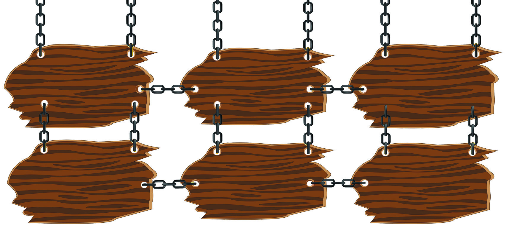

സാമൂഹ്്യശാസ്ത്രം I
140
അധ്്യയായം 7
ചുമതലകള്
സ്തീ സുരക്ഷയ്കായുള്ള
ഭരണഘടനാ
വ്്യവസ്ഥകളും നിയമ
ങ്ങളും പരിശോ�ോധിക്കുക.
സ്തീകളുടെ അവകാശങ്ങള്
സംരക്ഷിക്കുന്നതിനായുള്ള
നിയമനിര്മ്്മാണങ്ങള്ക്്ക്്
നിർദേശങ്ങൾ
സമർപ്ിക്കുക.
സ്തീകള് നേരിടുന്ന
വിവിധ പ്രശ്നങ്ങളില്
ഇടപെടുകയും പ്രശ്ന
പരിഹാരങ്ങള് നിർദേ
ശിക്കുകയും ചെയ്ുക.
സ്തീകളെ ബാധിക്കുന്ന
വിഷയങ്ങളിലെ നയരൂപീ
കരണത്ില് സര്ക്്കാ്കാരു
കള്ക്്ക്് ഉപദേശം നല്്കകുകുക.
സ്തീകള് നേരിടുന്ന
അസമത്്വങ്ങളും
വിവേചനങ്ങളും
ഇല്ലാതാക്കുന്നതിനുള്ള
നിർദേശങ്ങൾ നൽകുക.
ലിംഗനീതി ഉറപ്പുവരുത്ു
ന്നതുമായി ബന്ധപ്പെട്ട
പ്രവർത്തനങ്ങൾ.
സ്തീകളുടെ അവകാശങ്ങളുംം സുുരക്ഷയുംം ഉറപ്പുുവരുുത്തുുന്നതിനായിട്ടുുള്ള നിയമങ്ങള്
രാജ്യത്് നിലവിലുുണ്്. അവയില് ചിലത് നമുുക്് പരിചയപ്പെടാംം.
സ്തീധന നിരോ�ോധന നിയമം - 1961
സ്തീധനമെന്ന ദുുരാചാരംം സമൂഹത്ില് നിന്്നുുംം തുുടച്ചുുനീക്കുന്നതിനുംം സ്തീധന
ത്തിന്റെ പേരിലുുള്ള അതിക്രമങ്ങള് തടയുുന്നതിനുംം വേണ്ി 1961ല് പാര്ലമെന്റ്
ന്റ്
പാസ്ാക്ിയ നിയമമാണ് സ്തീധന നിരോ�ോധന നിയമംം. വിവാഹവുുമായി ബന്ധ
പ്പെട്് നിർബന്ധിതമായോ�ോ മുന്്ധധാധാരണകള് പ്രകാരമോ�ോ നല്്കകകുന്ന ധനമാണ്
സ്തീധനംം. ഒരുു നിശ്ചിത തുുകയോ�ോ ആഭരണങ്ങളോ�ോ സ്വത്്തതോ കൊ�ൊടുുക്കാമെന്നുുള്ള
വാഗ്ാനമാണ് ഒരാളെ വിവാഹത്ിന് സമ്മതിപ്ിക്കുന്നതെങ്ില് അതുംം സ്തീധനമാണ്.
ഈ നിയമപ്രകാരംം സ്തീധനംം സ്വീകരിക്കുന്നതുംം നല്്കകകുന്നതുംം കുറ്റകരമാണ്.
ഗാര്ഹികപീഡന നിരോ�ോധന നിയമം - 2005
നമ്മുടെ രാജ്യത്് 2006 ഒക്ടടോബര് 26നാണ് ഗാര്്ഹഹികപീഡന നിരോ�ോധന നിയമംം
പ്രാബല്യത്ില് വന്നത്. ജീവിതപങ്ാളിയില് നിന്്നനോ, ബന്ധുക്ക
ളില് നിന്്നനോ സ്തീകള്ക്്ക്
നേരിടേണ്ി വരുുന്ന പീഡനങ്ങളില് നിന്ന് സംംരക്ഷണംം നല്്കകകുന്നതാണ് ഈ നിയമംം.
സ്ത്രീത്വത്തെ അപമാനിക്കുന്നതുംം അപകടപ്പെടുുത്തുുന്നതുുമായ എല്ാ അതിക്രമങ്ങളുംം
ഗാര്്ഹഹികപീഡനത്തിന്റെ വിശാല നിർവചനത്ില് ഉള്പ്്പെടുുത്ിയിട്ടുുണ്്. ഗാര്്ഹഹിക
ദേശീയ വനിതാ കമ്ീഷൻ്റെ പ്രവർത്തനങ്ങളുമായി ബന്ധപ്പെട്ട വാർത്ത
കളുംം ചിത്രങ്ങളുംം ശേഖരിക്ുക.
ശേഖരിച്ച വിവരങ്ങൾ സാമൂഹ്്യശാസ്ത്ര ആൽബത്ിൽ ചേർക്ുക.
സ്തീകളുടെ അവകാശ സംംരക്ഷണവുമായി ബന്ധപ്പെട്ട്ട്ട് ദേശീയ വനിതാ കമ്ീഷൻ
ഇടപ്പെട്ടിട്ടുള്ള കേസുകൾ/സംംഭവങ്ങൾ അധ്യാപകരുടെ സഹഹ
ായത്്തതോടുകൂടി കണ്ടെ
ത്ുക.
Page 37


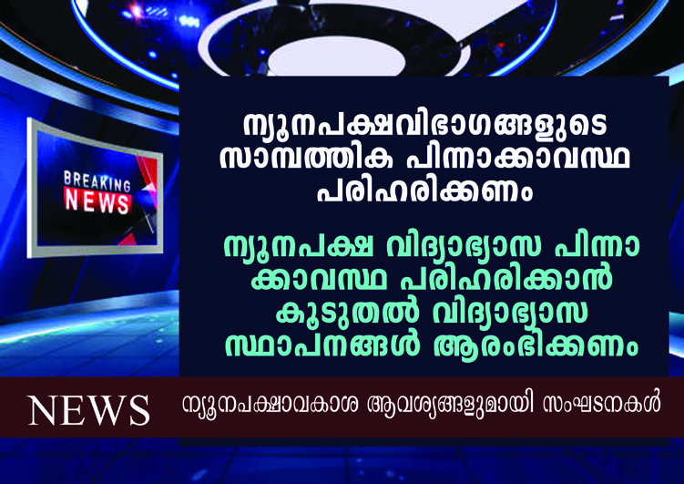
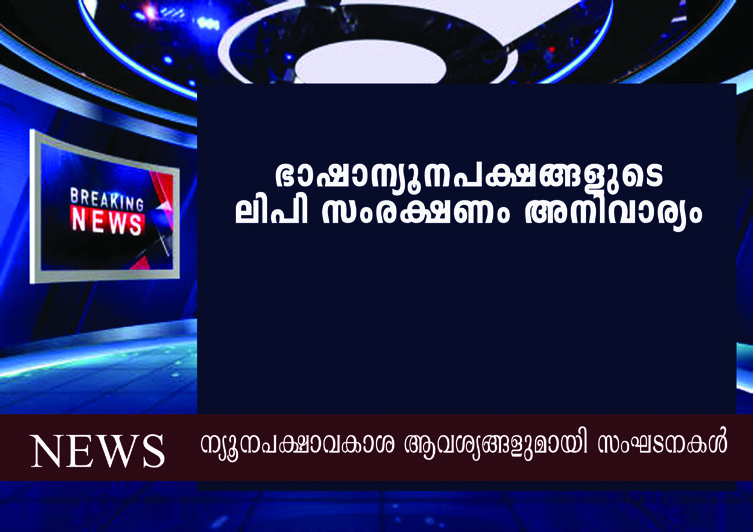

സ്റാൻഡേർഡ് IX
141
ജനാധിപത്്യത്ിന്റെ വ്്യാപനം സ്ാപനങ്ങളിലൂടെ
സംസ്ാന വനിതാ കമ്ീഷന്
1996 മാര്ച്്ച് 14 നാണ് കേരള സംംസ്ാന വനിതാ കമ്ീഷന് നിലവില്
വന്നത്. തിരുവനന്തപുരമാണ് ആസ്ാനംം. കമ്ീഷന്റെ ആദ്യത്തെ ചെയർ
പേഴ്സൺ കവയിത്രി സുഗതകുമാരി ആയിരുന്നു. ചെയർപേഴ്സണെ കൂടാതെ
നാല് അംംഗങ്ങള് ചേര്ന്നതാണ് സംംസ്ാന വനിതാ കമ്ീഷന്. അഞ്് വര്ഷ
മാണ് അംംഗങ്ങളുടെ ഔദ്യോഗിക കാലാവധി. സ്തീകള് അഭിമുഖീകരിക്ുന്ന
നീതിനിഷേധങ്ങള് ഉള്പ്്പെടെയുള്ള വിവിധങ്ങളായ പ്രശ്നങ്ങളില് ഇടപെടു
കയുംം ഉചിതമായ തീരുമാനങ്ങള് നിർദേശിക്ുകയുംം ചെയ്ുക, അതുമായി
ബന്ധപ്പെട്ട നടപടിക്രമങ്ങളില് സര്ക്്കാരിന് റിപ്്പപോര്ട്്ട്്ട് നല്്കകുകുക തുടങ്ങിങ്ങിയവ
കമ്ീഷന്റെ ചുമതലകളിൽപ്പെടുന്നു.
സ്ൂളില് ദേശീയ വനിതാദിനംം ആചരിക്ുന്നതിനായുള്ള മുന്്നനൊരുക്കങ്ങള്
നടത്ുക.
ഇതുമായി ബന്ധപ്പെട്ട്ട്ട് ഒരു ക്ഷണക്കത്് തയ്ാറാക്ുക.
സ്തീകള് നേരിടുന്ന പ്രശ്നങ്ങളെയുംം വനിതാ കമ്ീഷന്റെ ഇടപെടലുകളെയുംം
കുറിച്ചുള്ള പത്രവാര്ത്തകള് ശേഖരിച്് വാര്ത്്താ ആല്്ബബംം തയ്ാറാക്ുക.
പീഡനത്ിന് ഇരയാകുുന്ന സ്തീകള്ക്്ക് സംംരക്ഷണവുംം താമസവുംം സാമ്പത്ിക
സമാശ്വാസ നടപടികളുംം ഈ നിയമംം ഉറപ്പുുവരുുത്തുന്നുു.
ജനാധിപത്്യവ്യവസ്ഥയില് എല്ാ പൗരരുടെയുംം അവകാശങ്ങള് സംംരക്ഷിക്കപ്പെടേണ്ട
തുണ്്. ലിംംഗനീതി അതില് ഏറ്റവുംം പ്രധാനമാണ്. സ്തീകളുടെ അവകാശങ്ങളുംം അന്തസ്്സുുംം
സംംരക്ഷിക്കപ്പെടുന്നതിലൂടെ മാത്രമേ അത് പൂര്ണ്ണമാകുകയുള്ൂ. സമൂഹഹ
ത്ില് നില
നില്ക്്കുന്ന സ്തീവിരുദ്ധമായ പ്രവണതകളെ നിയമപരമായി മറികടക്ുന്നതിന് വേണ്ട
നടപടികള് വനിതാ കമ്ീഷന് കാലാകാലങ്ങളില് സ്വീകരിച്ചുപോ�ോന്നിട്ടുന്നിട്ടുണ്്.
ലിംംഗനീതി ഉറപ്ുവരുത്ുന്ന ഇത്തരംം ഇടപെടലുകളിലൂടെ സ്തീകള്ക്്ക് തുല്യാവ
കാശവുംം അവസരവുംം ഉറപ്ാക്ി ജനാധിപത്്യയം ശക്തിപ്പെടുത്ുന്നതില് വനിതാ കമ്ീഷന്
സുപ്രധാന പങ്കാണ് വഹഹ
ിക്ുന്നത്.
ദേശീയ ന്യൂനപക്ഷ കമ്ീഷന്
ന്യൂനപക്ഷങ്ങളുടെ
ന്യൂനപക്ഷങ്ങളുടെ
സാമൂഹികപുരോ�ോഗതി
സാമൂഹികപുരോ�ോഗതി
ഉറപ്പുവരുത്ുക
ഉറപ്പുവരുത്ുക
Page 38

സാമൂഹ്്യശാസ്ത്രം I
142
അധ്്യയായം 7
മുകളില് കൊ�ൊടുത്ിരിക്ുന്ന ടെലിവിഷന് വാര്ത്തകള് ശ്രദ്ിക്കൂ. ന്്യയൂന
പക്ഷങ്ങള് നേരിടുന്ന വിവിധ പ്രശ്നങ്ങളെക്ുറിച്ച് ന്്യയൂനപക്ഷ സംഘട
നകള് ഉന്നയിച്ച ആവശ്്യങ്ങളാണ്് വാര്ത്തയില്. എന്്തതൊക്കെ പ്രശ്നങ്ങ
ളാണ്് ഇവിടെ ഉന്നയിക്കപ്പെടുന്നത്്?
രാജ്്യത്തെ ന്്യയൂനപക്ഷങ്ങളുടെ താല്പര്യങ്ങള് സംര
ക്ഷിച്ച് അവരുടെ ക്ഷേമത്തിനായുള്ള നിയമങ്ങള് ഫല
പ്രദമായി നടപ്പിലാക്കപ്പെടുന്നുവെന്ന്്
ഉറപ്പുവരുത്ുന്ന
തിനുവേണ്ി രൂൂപീകരിക്കപ്പെട്ട സ്ഥാപനമാണ്് ദേശീയ
ന്്യയൂനപക്ഷ കമ്ീഷന്. മത-ഭാഷ-സാംസ്കാരിക ന്്യയൂനപ
ക്ഷങ്ങളുടെ അവകാശങ്ങള് സംരക്ഷിച്ച് ആ വിഭാഗങ്ങ
ളുടെ ക്ഷേമം ഉറപ്പുവരുത്ുക എന്നതാണ്് കമ്ീഷന്റെ
സുപ്രധാന ചുമതല. 1993 മെയ്് 17 നാണ്് ദേശീയ
ന്്യയൂനപക്ഷ കമ്ീഷന് നിലവില് വന്നത്്. ചെ
യർ
പേഴ്്സണും, വൈസ്് ചെയർപേഴ്്സണും അഞ്ച് അംഗ
ങ്ങളും ഉൾപ്പെടുന്നതാണ്് കമ്ീഷൻ. കേന്ദ്രഗവൺ
മെന്റാണ്് ഇവരെ നാമനിർദേശം ചെയ്ുന്നത്്. രാഷ്ട്രപതിയാണ്് കമ്ീഷന്
അംഗങ്ങളെ നിയമിക്ുന്നത്്. മൂന്ന്് വര്ഷമാണ്് അംഗങ്ങളുടെ ഔദ്യോഗിക
കാലാവധി. ദേശീയ ന്്യയൂനപക്ഷ കമ്ീഷന് വിപുലമായ അധികാരങ്ങളും
ചുമതലകളുമാണ്് നിർവഹിക്കാനുള്ളത്്.
ന്്യയൂനപക്ഷങ്ങളുടെ സംംരക്ഷണാർഥമുള്ള ഭരണ
ഘടനാ വ്്യവസ്ഥകളുടെയുംം നിയമങ്ങളുടെയുംം
പ്രവര്ത്തനംം വിലയിരുത്തുക.
ന്്യയൂനപക്ഷങ്ങളുടെ സാമൂഹിക വികസന
പുരോ�ോഗതി വിലയിരുത്തുക.
ന്്യയൂനപക്ഷങ്ങള് നേരിടുന്ന പ്രശ്നങ്ങളുംം പ്രതിസന്ികളുംം
സംംബന്ിച്ച റിപ്്പപോര്ട്ുകള് കാലാകാലങ്ങളില്
സമര്്പിക്ുക.
ന്്യയൂനപക്ഷങ്ങളുടെ അവകാശലംംഘനവുമായി ബന്ധ
പ്പെ�ട്ട പരാതികള് പരിശോ�ോധിിക്കുകയുംം� തുടര് നടപടി
കള്ക്കായി ശിപാര്ശകള് നടത്തുകയുംം� ചെxയ്യുുക.
ന്്യയൂനപക്ഷങ്ങള്ക്്കായുള്ള പരിരക്ഷകളുടെ കൃത്യമായ
പരിപാലനത്തിന
് വേണ്ട നിർദേശങ്ങള് സമര്്പിക്ുക.
ചുമതലകള്
സാമ്പത്ിക പിന്നാക്കാവസ്ഥ
Page 39


സ്റാൻഡേർഡ് IX
143
ജനാധിപത്്യത്ിന്റെ വ്്യാപനം സ്ാപനങ്ങളിലൂടെ
സംസ്ഥാന ന്യയൂനപക്ഷ കമ്മീഷന്
2013ല് ആണ്് കേരള സംസ്ഥാന ന്്യയൂനപക്ഷ കമ്ീഷന് നിലവില് വന്നത്്. ചെ
യർ
പേഴ്്സണും വൈസ്് ചെ
യർപേഴ്്സണും ഉൾപ്പെടെ നാല്് അംഗങ്ങളാണ്് കമ്ീഷനി
ലുള്ളത്്. ഇവരെ നാമനിർദേശം ചെയ്ുന്നത്് സംസ്ഥാന ഗവൺമെന്റാണ്്. മൂന്ന്് വര്ഷമാണ്്
അംഗങ്ങളുടെ ഔദ്യോഗിക കാലാവധി. ഭരണഘടനാന
ുസൃതമായി മത-ഭാഷാ ന്്യയൂന
പക്ഷങ്ങള്ക്്ക്് അനുവദിക്കപ്പെട്ട അവകാശങ്ങള് ലഭിക്കുന്നുണ്ടെന്ന്് ഉറപ്പുവരുത്ുന്നത്്
ന്യൂൂ�ന
പക്ഷ കമ്മീഷന്റെ� ചുമതലയാാണ്്്. ഈ വിഭാാഗങ്ങള്ക്ക്്്
വിദ്യാ�ാഭ്യാ�ാസസ്ഥാാപന
ങ്ങള് ആരംഭിക്കുന്നതിനുംം� നടത്തുന്നതിനുമാായി നടപടികൾ ശിപാാര്ശ ചെ�യ്യുന്നത്്്
കമ്ീഷനാണ്്.
ദേശീയ ന്്യയൂനപക്ഷ കമ്ീഷന്റെ ഇടപെടലുമായി ബന്ധപ്പെട്ട പത്രവാര്ത്തകള്
ശേഖരിക്ുക.
നിങ്ങളുടെ പ്രദേശത്ത്് ഭാഷാന്്യയൂനപക്ഷങ്ങള് ഉണ്്ടടോയെന്ന്് കണ്ടെത്താമോ�ോ?
ഭാഷാന്്യയൂനപക്ഷങ്ങൾ നേരിടുന്ന പ്രശ്നങ്ങളും പരിഹാരങ്ങളും ചര്ച്ചചെയ്ത്്
കുറിപ്പ്് തയ്യാറാക്ുക.
എല്ലാ വിഭാഗം ജനങ്ങളുടെയും പങ്കാളിത്തവും ഉള്ച്്ചേരലും ജനാ
ധിപത്യവ്യ
വസ്ഥയില് പ്രധാനമാണ്്. ന്്യയൂനപക്ഷ ഭാഷാവിഭാഗങ്ങള്, മതവിഭാഗങ്ങള്,
സാംസ്കാരികവിഭാഗങ്ങള് തുടങ്ങിയവരുടെ ഉന്നമനവും പുരോ�ോഗതിയും
ഇതിന് അത്യന്താപേക്ഷിക്ഷിതമാണ്്. ഇതോ�ോടൊ�ൊപ്പം ന്്യയൂനപക്ഷ ക്ഷേമം ഭൂൂരിപ
ക്ഷത്തിന്റെയും ചുമതലയാണെ
ന്ന പൊ�ൊതുബോ�ോധം സൃഷ്ടിക്കേണ്ടതുണ്ട്്. ഈ
ലക്ഷ്യങ്ങള് നേടിയെടുക്ുന്നതിന് ന്്യയൂനപക്ഷ കമ്ീഷന് നടത്ുന്ന ശ്രമങ്ങള്
ജനാ
ധിപത്യത്തിന്റെ വ്യയാപനത്ില് മുഖ്യ പങ്ുവഹിക്ുന്നു.
ഇന്തത്യത്യയുടെ പ്രഥമ പ്രധാനമന്തി ജവഹര്്ലലാല് നെഹ്്റുവിന്റെ വാക്ുകളാണ്്
മുകളില് കൊ�ൊടുത്ിരിക്ുന്നത്്. പട്ടികജാതി-പട്ടികവർഗ വിഭാഗത്ിലുള്ള ജന
ങ്ങള്ക്്കായി എന്്തതൊക്കെ വികസനപ്രവര്ത്തനങ്ങള് നടത്തണമെന്നാണ്് നെഹ്്റു
അഭിപ്രായപ്പെടുന്നത്്? ചർച്ചചെയ്ുക.
പട്ടികജാതി പട്ടികവർഗ പ്രദേശങ്ങളില് ഏറ്റവും മുന്ഗണന നല്്കകേണ്ടത്് റോ�ോഡു
കള്ക്കുംും വാര്ത്്താവിനിമയത്തിനുമാണ്്. അവയില്ലെങ്ില് നാം ചെയ്ുന്ന മറ്്ററൊന്്നുുംും
ഫലപ്രദമാകില്ല. സ്കൂളുകള്, ആരോ�ോഗ്യരക്ഷാ പ്രവര്ത്തനങ്ങള്, കുടില് വ്യവസാ
യങ്ങള് എന്നിങ്ങനെ പലതും ആവശ്്യമാണ്് എന്നത്് സുവ്യക്തമാണ്്. എന്നാല്
നാം അവരുടെ ജീവിതരീതിയില് ഇടപെടുകയില്ല എന്്നുുംും സ്വ്തം രീതി അനുസ
രിച്ച് ജീവിക്കാന് അവരെ സഹായിക്ുക മാത്രമേ ചെയ്യൂൂ എന്്നുുംും നാം എപ്്പപോഴും
ഓര്മ്്മിക്കണം.
ജവഹര്്ലലാല് നെഹ്്റു (ജൂൂണ് 7,1952)
ദേശീീയ പട്ടികജാാതിി - പട്ടികവർഗ കമ്മീഷനുകള്
Page 40

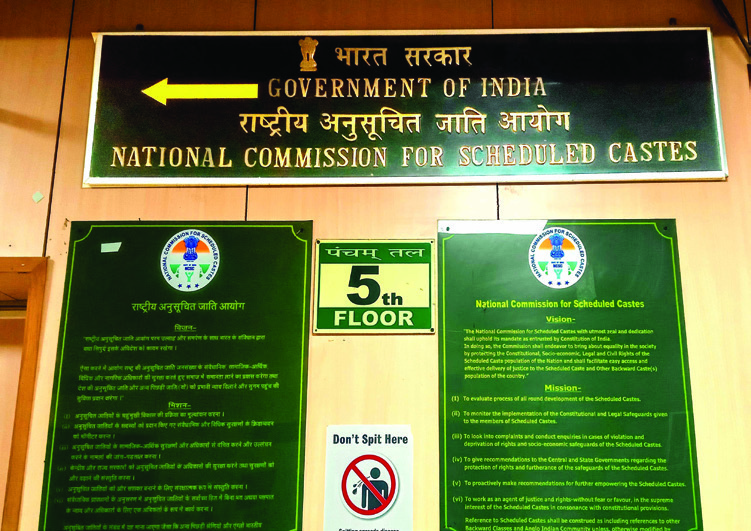

സാമൂഹ്്യശാസ്ത്രം I
144
അധ്്യയായം 7
റോ�ോഡുകള്, വാര്ത്്താവിനിമയ സൗകര്യങ്ങള്.
വിവേചനങ്ങളില് നിന്്നുുംം ചൂഷണ
ങ്ങളില് നിന്്നുുംം പട്ടികജാതി-പട്ടിക
വർഗ ജനവിഭാഗങ്ങളെ സംംരക്ി
ക്ുകയുംം അവരെ സമൂഹഹ
ത്തിന്റെ
മുഖ്്യധാരയിലേക്് കൊ�ൊണ്ുവരി
കയുംം ചെയ്ുക എന്ന ലക്ഷഷ്യത്്തതോടെ
രൂപീകരിക്കപ്പെട്ട സ്ാപനങ്ങളാണ്
പട്ടികജാതി കമ്ീഷനുംം പട്ടിക
വർഗ കമ്ീഷനും. ഇതിനോ�ോടൊ�ൊപ്പംം
അവരുടെ സാംംസ്ാരിക വൈവിധ്യ
ങ്ങളുംം സവിശേഷതകളുംം സംംരക്ി
ക്ുകയെന്നതുംം പ്രധാനമാണ്. 2004 ലാണ് രണ്് കമ്ീഷനുകളുംം നിലവില്
വന്നത്. ചെയർപേഴ്സണുംം വൈസ് ചെയർപേഴ്സണുംം മറ്റ് മൂന്ന് അംംഗങ്ങളുംം
ഉൾപ്പെടുന്നതാണ് കമ്ീഷൻ. രാഷ്ട്രപതിയാണ് കമ്ീഷന് അംംഗങ്ങളെ നിയ
മിക്ുന്നത്. മൂന്നുവര്ഷമാണ് അംംഗങ്ങളുടെ ഔദ്യോഗിക കാലാവധി.
ദേശീയ പട്ടികജാതി - പട്ടികവർഗ്ഗ കമ്ീഷനുകളുടെ ആസ്ാനംം - ന്യൂഡൽഹഹ
ി
പട്ികജാതി-പട്ികവർഗ (അതിക്രമങ്ങൾ തടയൽ) നിയമം-1989
പട്ടികജാതി-പട്ടികവർഗങ്ങൾക്കെതിരെയുള്ള
അതിക്രമങ്ങൾ
തടയുക,
ഇത്തരംം കുറ്റകൃത്്യങ്ങൾ കൈകാര്യയം ചെയ്ുന്നതിന് പ്രത്്യയേക കോ�ോടതികൾ
സ്ാപിക്ുക, ഇവരുടെ സ്വവാസ്ഥഥ്യ്യത്ിനുംം പുനരധിവാസത്ിനുംം നടപടി
കൾ സ്വീകരിക്ുക തുടങ്ങിങ്ങിയ ഉദ്ദേ്ദേശ്്യങ്ങളോ�ോടെ നിലവിൽ വന്ന നിയമമാണ്
പട്ടികജാതി-പട്ടികവർഗ (അതിക്രമങ്ങൾ തടയൽ) നിയമംം. 1989 ലാണ് ഈ
നിയമംം നിലവിൽ വന്നത്. ഈ നിയമംം പട്ടികവിഭാഗങ്ങൾക്ു നേരെയുള്ള
Page 41


സ്റാൻഡേർഡ് IX
145
ജനാധിപത്്യത്ിന്റെ വ്്യാപനം സ്ാപനങ്ങളിലൂടെ
പട്ടികജാതി-പട്ടികവർഗ
വിഭാഗങ്ങള് നേരിടുന്ന വെല്ു
വിളികൾ പരിഹരിക്ുന്നതിനുള്ള
മാർഗനിർദേശങ്ങൾ സര്ക്്കാരു
കള്ക്്ക്് സമര്പ്്പിക്ുക.
പട്ടികജാതി-
പട്ടികവർഗ
ക്ഷേമത്തിനാ
യുള്ള ഭരണ
ഘടനാവ്്യവസ്ഥ
കളും നിയമങ്ങളും
കാര്യക്ഷമമായി
നടപ്പിലാക്ുന്നു
വെന്ന്് വിലയി
രുത്ുക.
പട്ടികജാതി-പട്ടികവർഗ വിഭാഗ
ങ്ങള്ക്്കെതിരെയുള്ള അതിക്രമങ്ങ
ളുമായി ബന്ധപ്പെട്ട പരാതികള്
അന്്വവേഷിക്ുക.
പട്ടികജാതി
- പട്ടികവർഗ
വിഭാഗങ്ങളുടെ
ക്ഷേമം, സംര
ക്ഷണം, ഉന്നമനം
എന്നിവ ലക്ഷ്യ
മാക്ിയുള്ള
പ്രവര്ത്തനങ്ങള്
ഏകോ�ോപിപ്പി
ക്ുക.
പട്ടികജാാതിി-
പട്ടികവർഗ
കമ്മീഷനുകൾ-
ചുമതലകള്
അതിക്രമങ്ങളും നിയമലംഘനങ്ങളും എന്തെന്്നുുംും കുറ്റക്കാർക്ുള്ള ശിക്ഷാ
നടപടികൾ എന്തെല്ലാമെന്്നുുംും ഇവരുടെ പുനരധിവാസം എങ്ങനെയായിരിക്ക
ണമെന്്നുുംും വ്യവസ്ഥചെയ്ുന്നു.
സംസ്ഥാന പട്ടിക
ജാാതിി-പട്ടിക ഗോ�ോത്ര
വർഗകമ്മീഷന്
കേ�രളത്തിലെ� പട്ടികജാാതി
- പട്ടിക ഗോ�ോത്രവർഗ
വിഭാഗങ്ങളിൽപ്പെ�ട്ടവരുടെ
ക്ഷേ�മവുംം� സംംംരക്ഷണവുംം�
ഉറപ്പാക്കുക എന്ന ലക്ഷ്യയ
ത്തോ�ോടെ രൂപവൽക്കരിക്ക
പ്പെ�ട്ട സ്ഥാപനമാാണ് കേ�രള
പട്ടികജാാതി-പട്ടിക ഗോ�ോത്ര
വർഗകമ്മീഷന്. ചെയർ
പേഴ്സണുംം മറ്ു രണ്ട്
അംംഗങ്ങളുംം ഉൾപ്പെടുന്ന
താണ് കമ്മീഷന്. ഗവര്ണര്ണ
റാണ് ഇവരെ
നിയമിക്ു
ന്നത്. മൂന്ന് വര്ഷര്ഷമാണ്
അംംഗങ്ങളുടെ ഔദ്യോ
ഗിക കാലാവധി. പട്ടിക
ജാതി-പട്ടികവർഗവിഭാഗ
ങ്ങളുടെ അവകാശങ്ങള്
നിഷേധിക്കപ്പെടുന്നതുമാ
യി ബന്ധപ്പെട്ട പരാതിക
ളില് അന്വേ�േഷണംംം നടത്തു
കയുംം� അനന്തരനടപടികള്
ശിപാര്ശ ചെxയ്യുുകയുമാണ്
പ്രധാന ചുമതല. കൂടാതെ�
പ്രസ്തുുത വിഭാഗങ്ങളുടെ
സാമൂഹിക – സാമ്പത്തിക
സ്ഥിതി വിലയിരുത്തു
കയുംം അവരുടെ
പുരോ�ോഗതി ഉറ്പാക്ുന്ന
തുമായി ബന്ധപ്പെട്ട നിർ
ദേശങ്ങൾ നൽകുന്നതുംം
കമ്മീഷന്റെ ചുമതലക
ളില്പ്്പെടുന്നു.
ചരിത്രഗതിയില് സാമൂൂഹികമായി പാര്ശ്വവൽക്കരിക്കപ്പെട്ടുപോ�ോ
യ
ജനവിഭാഗങ്ങളുടെ സജീവമായ പങ്കാളിത്ം ഉറപ്പുവരുത്ുന്ന
തിലൂടെ മാത്രമേ ജനാ
ധിപത്യം പൂൂര്ണ്ണമാകുകയുള്ളൂൂ. അവരുടെ
സവിശേഷമായ പാരമ്പര്യ അറിവുകളും സംസ്കാരവും തനിമ നഷ്ട
പ്പെടാതെ സംരക്ഷിക്കപ്പെടുന്നതോ�ോടൊ�ൊപ്പം ആധുനിക സമൂൂഹ
ത്ില്
ഈ
ജനതയുടെ
ഉള്ച്്ചേരലും
ഉറപ്പാക്കേണ്ടതുണ്ട്്.
ദേശീയ പട്ടികജാതി കമ്ീഷന്, പട്ടികവർഗ കമ്ീഷന് എന്നിവയുടെ
പ്രവര്ത്തനങ്ങള് ഈ പ്രക്രിയയുടെ ആക്ം കൂട്ടുൂട്ടുകയും ജനാ
ധിപ
ത്യത്തെ കൂൂടുതല് കരുത്ുറ്റതാക്ുകയും ചെയ്ുന്നു.
പട്ടികജാതി-പട്ടികവർഗ വിഭാഗങ്ങള്ക്്കായി
സര്ക്്കാര്
നടപ്പിലാക്കിക്്കകൊണ്ിരിക്ുന്ന
വിവിധ ക്ഷേമപദ്ധതികള് ഏതൊ�ൊക്കെയാ
ണെന്ന്് കണ്ടെത്ി പട്ടികപ്പെടുത്ുക.
ദേശീയ പട്ടികജാതി-പട്ടികവർഗ കമ്ീഷനുകളുടെ ഇട
പെടലുകള് സൂൂചിപ്പിക്ുന്ന പത്രവാര്ത്തകള് ശേഖരി
ക്ുക.
Page 42

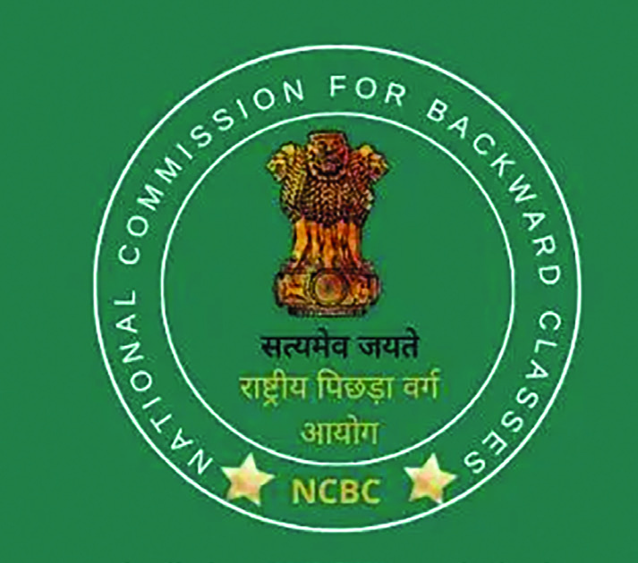

സാമൂഹ്്യശാസ്ത്രം I
146
അധ്്യയായം 7
ഡോ�ോ. ബി.ആർ.അംബേ
ദ്കറുടെ പ്രസംംഗംം ശ്രദ്ിക്ൂ. എന്്തതൊക്കെ കാര്യങ്ങ
ളാണ് പിന്നാക്കവിഭാഗങ്ങളുടെ ഉന്നമനത്ിനായി അംബേ
ദ്കർ നിർദേശി
ക്ുന്നത്?
രാജ്യത്തെ സാമൂഹഹ
ികമായുംം സാമ്പത്ികമായുംം
പിന്നാക്കംം നില്ക്്കുന്ന വിഭാഗങ്ങളുടെ ഉന്നമനംം
ലക്ഷഷ്യ്യമാക്ിയാണ് പിന്നാക്ക വിഭാഗങ്ങള്ക്്കായുള്ള
ദേശീയ കമ്ീഷന് സ്ാപിച്ചിട്ടുള്ളത്. സാമൂഹഹ
ികമായുംം
വിദ്യയാഭ്യാസപരമായുംം പിന്നാക്കംം നില്ക്്കുന്ന വിഭാഗ
ങ്ങളുടെ പിന്നാക്ാവസ്ഥ പരിഹഹ
രിക്ുന്നതിനുള്ള
നിർദേശങ്ങള് സമര്പ്്പിക്ുക എന്നതുംം കമ്ീഷന്റെ
ചുമതലകളില് ഉൾപ്പെടുന്നതാണ്. 1993 ലാണ് കമ്ീ
ഷൻ നിലവിൽ വന്നത്. ചെയർപേഴ്സണുംം വൈസ്
ചെയർപേഴ്സണുംം മൂന്ന് അംംഗങ്ങളുംം ചേര്ന്നതാണ്
കമ്ീഷന്. രാഷ്ട്രപതിയാണ് കമ്ീഷന് അംംഗങ്ങളെ
നിയമിക്ുന്നത്. മൂന്നുവര്ഷമാണ് അംംഗങ്ങളുടെ
ഔദ്യോഗിക കാലാവധി. 2018ല് കമ്ീഷന് ഭരണഘടനാ
പദവി ലഭ്യമായി.
വിദ്യയാഭ്യാസംം എല്ാവർക്്കുുംം പ്രാപ്യമായ ഒരു നിലയിലേക്്
കൊ�ൊണ്ുവന്നേ മതിയാകൂ. പിന്നാക്ക വിഭാഗംം ജനങ്ങൾക്് ഉന്നത
വിദ്യയാഭ്യാസംം എത്രയുംം ചെലവ് കുറഞ്ഞതായിരിക്ുകയെന്ന
താവണംം വിദ്യയാഭ്യാസവകുപ്പിന്റെ നയംം. ഈ സമുദായങ്ങളെ
യെല്്ലാാംം സമത്്വത്തിലേക്് ഉയർത്ുവാനാണെങ്കിങ്കിൽ അതിന് ഒരേ
ഒരു പോ�ോംംംവഴി താണ നിലയിലുള്ളവർക്് പ്രത്്യയേക പരിഗണന
നൽകുക മാത്രമാണ്.
ഡോ�ോ.ബി.ആർ.അബേദ്കർ -
1927 ഫെബ്ുവരി 24 ലജിസ്ലേറ്റീവ് കൗസിൽ ബജറ്റ് പ്രസംംഗംം
ദേശീയ പിന്ാക്കവിഭാഗ കമ്ീഷന്
ഉന്നതവിദ്യയാഭ്യാസംം ചെലവ് കുറഞ്ഞതാക്ുക.
Page 43

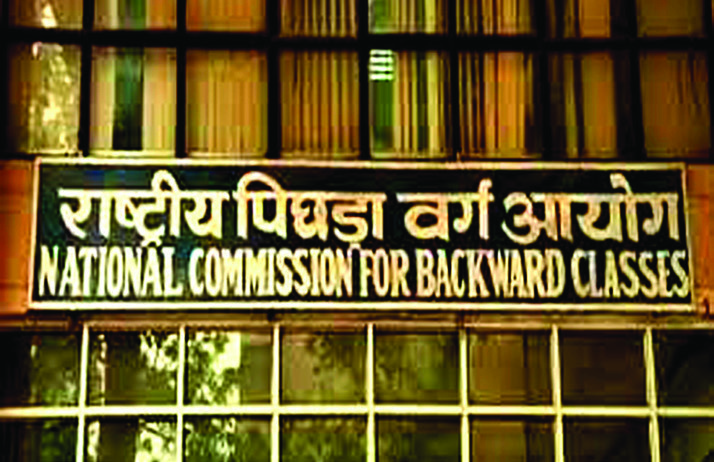

സ്റാൻഡേർഡ് IX
147
ജനാധിപത്്യത്ിന്റെ വ്്യാപനം സ്ാപനങ്ങളിലൂടെ
ദേശീീയ പിിന്നാാക്ക
വിിഭാാഗ കമ്മീഷൻ-
ചുമതലകള്
പിന്നാക്ക
വിഭാഗ
ങ്ങള്ക്്കായുള്ള ഭര
ണഘടനാ വ്യവസ്ഥ
കളും നിയമങ്ങളും
കാര്യക്ഷമമായി നട
പ്പിലാക്കുന്നുവെന്ന്്
ഉറപ്പാക്ുക.
പിന്നാക്ക
വിഭാഗ
ങ്ങളുടെ ക്ഷേമത്തിനാ
യുള്ള വിവിധ സംവിധാനങ്ങ
ളുടെ പ്രവർത്തനങ്ങളെ സംബ
ന്ധിച്ച് റിപ്്പപോര്ട്്ടു്ടുകൾ സര്ക്്കാ
രുകള്ക്്ക്് സമർ
പ്പിക്ുക.
പിന്നാക്ക
പദവി സംബ
ന്ധിച്ച ആവശ്്യങ്ങള് പരി
ശോ�ോധിച്ച് വേണ്ട നിർദേ
ശങ്ങള് സര്ക്്കാരുകള്ക്്ക്്
സമര്പ്്പിക്ുക.
പിന്നാാക്കവിഭാാഗ
ങ്ങള് നേ�രിടുന്ന
അതിക്രമങ്ങൾ
ക്കെ�തിരെെ നടപ
ടികള് സ്വീീ�ക
രിക്കുന്നതിനുംം�
നീതി ഉറപ്പാാക്കു
ന്നതിനുമുള്ള
ശിപാാര്ശകൾ
നൽകുക.
കേരളസംസ്ഥാന
പിിന്നാാക്കവിിഭാാഗ
കമ്മീഷന്
കേരളസംസ്ഥാന പിന്നാക്ക
വിഭാഗ കമ്ീഷന് നിലവില്
വന്നത്് 1993 ലാണ്്. മൂന്നുൂന്നു
വര്ഷമാണ്് കമ്ീഷന്റെ
ഔദ്യോഗിക കാലാവധി.
പിന്നാക്ക
വിഭാഗങ്ങളുടെ
സാമൂൂഹിക-സാമ്പത്ിക
അവസ്ഥ പരിഗണിച്ച്
പ്രസ്ുത ജനവിഭാഗങ്ങളെ
സംവരണ ലിസ്റിൽ ഉൾപ്പെ
ടുത്ി ആനുകൂല്്യങ്ങൾ
നൽകുന്നതിന് വേണ്ുന്ന
നിർദേശങ്ങൾ സമർപ്പിക്ു
കയെ
ന്നതും കമ്ീഷൻ്റെ
ചുമതലയിൽപ്പെടുന്നു.
ദേശീയ പിന്നാക്ക
വിഭാഗ കമ്ീഷൻ
ആസ്ഥാനം - ന്്യയൂൂഡൽഹി
ദേശീയ പിന്നാക്ക
വിഭാഗ കമ്ീ
ഷന്റെയും സംസ്ഥാന പിന്നാക്ക
വിഭാഗ കമ്ീഷന്റെയും നിലവിലെ
അധ്യക്ഷർ ആരാണെന്ന്് കണ്ടെ
ത്ുക.
ദേശീയ പിന്നാക്ക
വിഭാഗ കമ്ീഷന്റെ പ്രവര്ത്ത
നങ്ങളെക്ുറിച്ച് കുറിപ്പ്് തയ്യാറാക്ുക.
വിശാലമായ ഭൂൂവിസ്തൃതിയും ഉയര്ന്ന ജനസംഖ്യയും സാംസ്കാരികവൈവിധ്യ
വുമുള്ള നമ്മുടെ രാജ്്യത്ത്് വിവിധ ജനവിഭാഗങ്ങളുടെ സാമൂൂഹിക-സാമ്പ
ത്ിക പിന്നാക്കാവസ്ഥ പരിഹരിക്കേണ്ടത്് അനിവാര്യമാണ്്. ഭരണഘടന
വിഭാവനം ചെയ്ുന്ന അവസരസമത്വവും സാമൂൂഹികനീതിയും പങ്കാളിത്തവും
ഉറപ്പുവരുത്ുന്നതിലൂടെ മാത്രമേ ഈ പിന്നാക്കാവസ്ഥയ്ക്ക്് പരിഹാരം
കാണാന് കഴിയുകയുള്ളൂൂ. സാമൂൂഹിക-സാമ്പത്ിക പിന്നാക്കാവസ്ഥയിലുള്ള
ജനവിഭാഗങ്ങളെ കൂൂടി സമൂൂഹത്തിന്റെ മുഖ്യധാരയിലെത്ിക്ുന്നതിലൂടെ
മാത്രമേ ജനാ
ധിപത്യം പൂൂര്ണ്ണമാകുകയുള്ളൂൂ.
ജനാാധിിപത്യത്തിിന്റെ വ്യയാാപനം: സ്ഥാപനങ്ങളുടെ പങ്ക്
Page 44

സാമൂഹ്്യശാസ്ത്രം I
148
അധ്്യയായം 7
ജനാധിപത്്യ
ഭരണസംംവിധാനത്തിന്റെ
വിജ
യവുംം പരാജയവുംം ജനപങ്കാളിത്ത്
ില് അധി
ഷ്ഠിതമാണ്. വിവിധ ജനവിഭാഗങ്ങളുടെ പങ്കാ
ളിത്തംം രാഷ്ട്രീയപ്രക്രിയയില് ഉറപ്ാക്ുന്നതില്
മുകളില് പ്രതിപാദിച്ചിട്ടുള്ള ഭരണഘടനാ- ഭര
ണഘടനേതര സ്ാപനങ്ങള്ക്്ക് സുപ്രധാന
സ്ാനമാണുള്ളത്. ഉദാഹഹ
രണമായി തിരഞ്ഞെ
ടുപ്് കമ്ീഷന് പൗരരുടെ രാഷ്ട്രീയാവകാശങ്ങള്
സ്വതന്ത്രമായുംം നിര്ഭയമായുംം വിനിയോ�ോഗിക്ു
ന്നതിനുള്ള സാഹഹ
ചര്യയം സൃഷ്ിക്ുന്നതിലൂടെ
രാഷ്ട്രീയജനാധിപത്്യത്തിന്റെ അടിത്തറ വിപു
ലമാക്ുന്നു. 1951-52 കാലഘട്ടംം മുതൽ തന്നെ
തിരഞ്ഞെടുപ്് ജനാധിപത്്യയം ശാക്തീകരിക്ു
ന്നതിനുംം
സ്വതന്ത്രവുംം
നീതിപൂർവവുമായ
തിരഞ്ഞെടുപ്് ഉറപ്ുവരുത്ുന്നതിനുംം ആവ
ശ്്യമായ നടപടികൾ തിരഞ്ഞെടുപ്് കമ്ീഷൻ
സ്വീകരിച്ിട്ടുണ്്. മണ്ഡലങ്ങൾ നിർണ്ണയിക്കൽ,
വോ�ോട്ടർപട്ടിക തയ്ാറാക്കൽ, സാർവത്രിക പ്രായ
പൂർത്തിവോ�ോട്ടവകാശംം നടപ്ിലാക്കൽ, രാഷ്ട്രീ
യപാർട്ടികൾക്് അംംഗീകാരംം നൽകൽ, തിര
ഞ്ഞെടുപ്്
പരിഷ്കാരങ്ങൾ
നടപ്ിലാക്കൽ,
തിരഞ്ഞെടുപ്് സാക്ഷരത കൈവരിക്കൽ തുട
ങ്ങിയ കമ്ീഷൻ നിർവഹഹ
ിച്ുവരുന്ന ധർമ്മങ്ങൾ
ഇന്ത്യൻ
ജനാധിപത്്യത്തെ
ശക്തിപ്പെടുത്ി
യിട്ടുണ്്.
ചരിത്രപരമായ
കാരണങ്ങളാല്
പാര്ശ്വവൽ
ക്കരിക്കപ്പെട്ട വിവിധ വിഭാഗങ്ങളെ ജനാധിപത്്യ പ്രക്രിയയുടെ ഭാഗമാക്ി
സമൂഹഹ
ത്തിന്റെ മുഖ്്യധാരയിലേക്് കൊ�ൊണ്ുവരുന്നതില് ദേശീയ മനുഷ്യാവ
കാശ കമ്ീഷൻ, ദേശീയ വനിതാ കമ്ീഷന്, ദേശീയ ന്യൂനപക്ഷ കമ്ീഷന്,
ദേശീയ പട്ടികജാതി കമ്ീഷന്, ദേശീയ പട്ടികവർഗ കമ്ീഷന്, ദേശീയ
പിന്നാക്കവിഭാഗ കമ്ീഷന് തുടങ്ങിങ്ങിയ സ്ാപനങ്ങള് സുപ്രധാന പങ്കുവഹഹ
ിക്ുന്നു. തിരഞ്ഞെടുപ്് ജനാധിപത്്യത്ിനപ്ുറംം അരികുവൽക്കരിക്കപ്പെട്ട
വിഭാഗങ്ങളുടെ വിഷമതകൾ പ്രത്്യയേകമായി തന്നെ പരിഹഹ
രിക്കപ്പെടേണ്ട
തുണ്്. ഈ ധർമ്മാണ് മേൽ സൂചിപ്പിച്ച കമ്ീഷനുകൾ നിർവഹഹ
ിക്ുന്നത്.
സാമൂഹഹ
ിക പിന്്നനോക്ാവസ്ഥയുമായി ബന്ധപ്പെട്ട്ട്ട് പ്രശ്നങ്ങൾക്് പരിഹഹ
ാരംം
കാണുന്നതിനൊ�ൊപ്പംം വ്യക്തിപരമായി നേരിടുന്ന പ്രശ്നങ്ങൾക്്കുുംം പരിഹഹ
ാരംം
കാണുന്നതിന് ഈ കമ്ീഷനുകൾ ശ്രമിക്ുന്നുണ്്.
പൗരാവകാശസംംരക്ഷണത്്തതോടൊ�ൊപ്പംം മനുഷ്യരില് അന്തര്ലീനമായ അന്ത
സ്ില് നിന്ന് ഉരുത്ിരിഞ്ഞുവന്ന അവകാശങ്ങളുടെ സംംരക്ഷണവുംം
ഉറപ്ുവരുത്തേണ്ടത് ജനാധിപത്്യത്തിന്റെ വ്യാപനത്ിന് അനിവാര്യമാണ്.
യൂണിയൻ പബ്ിക്്
സർവീസ്് കമ്ീഷന് (UPSC)
ഭാരതസർക്ാർ നിയമനങ്ങൾക്ായി സ്ാപി
തമായ ഭരണഘടനാസ്ാപനമാണ് യൂണിയൻ
പബ്ിക് സർവീസ് കമ്ീഷൻ (UPSC). ഇന്ത്യൻ
ഭരണഘടനയുടെ അനുഛേദംം 320 പ്രകാ
രമാണ് കമ്ീഷൻ നിലവിൽ വന്നിട്ടുള്ളത്.
ചെയർപേഴ്സണുംം പത്് അംംഗങ്ങളുമാണ്
കമ്ീഷനിലുള്ളത്. രാഷ്ട്രപതിയാണ് ഇവരെ
നിയമിക്ുന്നത്. ആറ് വർഷമോ�ോ 65 വയസോ�ോ
ആണ് അംംഗങ്ങളുടെ ഔദ്യോഗിക കാലാവധി.
അഖിലേന്ത്യാന്ത്യാസർവീസിലേക്്കുുംം (All India
Service) കേന്ദ്രസർവീസിലേക്്കുുംം (Central
Civil Service) ഉള്ള നിയമനങ്ങൾ നടത്ുന്നത്
യു.പി.എസ്.സി. ആണ്. കേന്ദ്ര സർക്ാരിന്റെ
സേവനങ്ങളിലേക്് നിയമനത്ിനായി പരീ
ക്ഷകളിലൂടെയുംം അഭിമുഖങ്ങളിലൂടെയുംം
തിരഞ്ഞെടുപ്് നടത്ുക എന്നതാണ് കമ്ീ
ഷൻ്റെ മുഖ്്യചുമതല. സംംസ്ാനങ്ങളിൽ
സർക്ാർ സേവനങ്ങൾക്ായി നിയമനങ്ങൾ
നടത്ുന്നത് അതാത് സംംസ്ാനങ്ങളിലെ
പബ്ിക് സർവീസ് കമ്ീഷൻ (PSC) ആണ്.
കേരളത്ിൽ കേരള പബ്ിക് സർവീസ് കമ്ീ
ഷൻ (KPSC) ആണ് സംംസ്ാന സർക്ാർ
നിയമനങ്ങൾ നടത്ുന്നത്.
Page 45


സ്റാൻഡേർഡ് IX
149
ജനാധിപത്്യത്ിന്റെ വ്്യാപനം സ്ാപനങ്ങളിലൂടെ
ഇത്തരംം
അവകാശങ്ങള്
ഉറപ്ുവരുത്ി
ജനാധിപത്്യപ്രക്രിയയെ ദൃഢമാക്ുന്നതില്
മനുഷ്യാവകാശ കമ്ീഷന് സ്ുത്്യര്ഹഹ
മായ പങ്കുവഹഹ
ിക്ുന്നു. വനിതകളുടെ സാമൂഹഹ
ികമായ മുന്നേറ്റംം
ഉറപ്ുവരുത്ുന്നതിനുംം സ്തീകൾക്കെതിരായ അതി
ക്രമങ്ങൾ തടയുന്നതിനുംം അവരുടെ അന്തസ്്
ഉയർത്ിപ്പിടിക്ുന്നതിനുംം സഹഹ
ായകമായ നട
പടികൾ സ്വീകരിക്ുന്നതിലൂടെ വനിതാ കമ്ീ
ഷൻ ജനാധിപത്്യത്തെ കൂടുതൽ അർഥപൂർണ്ണ
മാക്ുന്നു.
ന്യൂനപക്ഷങ്ങളുടെ സംംരക്ഷണവുംം തുല്യപരി
ഗണനയുംം ഉറപ്ുവരുത്തേണ്ടത് ഒരു ജനാധി
പത്്യരാഷ്ട്രത്തിന്റെ ഉത്തരവാദിത്്വമാണ്. ന്യൂന
പക്ഷവിഭാഗങ്ങൾക്കെതിരായ അതിക്രമങ്ങൾ
തടയുന്നതിലൂടെയുംം ന്യൂനപക്ഷ അവകാശങ്ങൾ
ഉറപ്ുവരുത്ുന്നതിലൂടെയുംം ന്യൂനപക്ഷ കമ്ീ
ഷൻ ജനാധിപത്്യത്തെ ശക്തിപ്പെടുത്ുന്നു.
പട്ടികജാതി-പട്ടികവർഗവിഭാഗങ്ങൾ നേരിടുന്ന വിവിധങ്ങളായ സാമൂഹഹ
ിക-സാമ്പത്ിക പ്രശ്നങ്ങളെ പരിഹഹ
രിക്ുന്നതിനുംം അവരെ മുഖ്്യധാരയിൽ
എത്ിക്ുന്നതിനുംം ആവശ്്യമായ നടപടികൾ സ്വീകരിക്ുന്നതിലൂടെ പട്ടിക
ജാതി-പട്ടികവർഗ കമ്ീഷനുകൾ വലിയ ഉത്തരവാദിത്്വമാണ് നിറവേറ്റുറ്റുന്നത്.
മറ്റു പിന്നാക്ക വിഭാഗങ്ങളുടെ സാമൂഹഹ
ികവുംം സാമ്പത്ികവുംം വിദ്യയാഭ്യാസപര
വുമായ പിന്നാക്ാവസ്ഥകൾ പരിഹഹ
രിച്ചുകൊ�ൊണ്് അവരെയുംം സമൂഹഹ
ത്തിന്റെ
മുഖ്്യധാരയുടെ ഭാഗമാക്ുകയെന്ന ജനാധിപത്്യവത്്ക്്കരണമാണ് പിന്നാക്കവി
ഭാഗ കമ്ീഷൻ നിർവഹഹ
ിക്ുന്നത്.
ഇപ്രകാരംം പാര്ശ്വവൽക്കരിക്കപ്പെട്ട ജനവിഭാഗങ്ങളെ ഉള്ച്്ചേര്ക്്കുകയുംം
രാഷ്ട്രീയ അവകാശങ്ങളുടെ വിനിയോ�ോഗംം സാധ്യമാക്ുകയുംം ചെയ്ുന്നതി
ലൂടെ മേല്പറഞ്ഞ സ്ാപനങ്ങള് ഇന്ത്യൻ ജനാധിപത്്യത്തെ സാമൂഹഹ
ിക-
സാമ്പത്ിക തലങ്ങളിലേക്ുകൂടി വ്യാപിപ്ിക്ുന്നു.
ദേശീയ ബാലാവകാശ
സംരക്ഷണ കമ്ീഷൻ
കുട്ടികളുടെ അവകാശങ്ങൾ സംംരക്ിക്ുക
എന്ന ലക്ഷഷ്യത്്തതോടെ സ്ാപിക്കപ്പെട്ട കമ്ീ
ഷനാണ് ദേശീയ ബാലാവകാശ സംംരക്ഷണ
കമ്ീഷൻ. വനിതാശിശുവികസന മന്താല
യത്തിന്റെ കീഴിലാണ് കമ്ീഷൻ പ്രവർത്ി
ക്ുന്നത്. 2007 മാർച്് 5 നാണ് കമ്ീഷൻ
നിലവിൽ വന്നത്. ഒരു ചെയർപേഴ്സണുംം 6
അംംഗങ്ങളുമാണ് കമ്ീഷനിലുള്ളത്. കുട്ടിക
ളുടെ വിദ്യയാഭ്യാസംം, ആരോ�ോഗ്യയം, പരിചരണംം,
ക്ഷേമംം, നീതി തുടങ്ങിങ്ങിയവ കമ്ീഷൻ്റെ ലക്ഷഷ്യ്യ
ങ്ങളാണ്. കേരളത്ിൽ കുട്ടികളുടെ അവകാശ
സംംരക്ഷണത്ിനായി കേരളസംംസ്ാന
ബാലാവകാശ കമ്ീഷൻ പ്രവർത്ിച്ുവരുന്നു.
തുുടർ പ്രവർത്തനങ്ങൾ
1. അന്തര്്ദദേശീയ വനിതാദിനവുമായി ബന്ധപ്പെട്ട്ട്ട് “സ്തീസുരക്ഷ”എന്ന വിഷയത്ില് ഒരു
സെമിനാര് സംംഘടിപ്ിക്ുക.
ജനാധിപത്്യത്തിന്റെ വ്യാപനത്ിൽ സ്ാപനങ്ങളുടെ പങ്ക് എന്ന വിഷയ
ത്ിൽ ക്ാസിൽ ഒരു പാനൽ ചർച്ച സംംഘടിപ്ിക്ുക.
Page 46
സാമൂഹ്്യശാസ്ത്രം I
150
അധ്്യയായം 7
കമ്ീഷന്റെ പേര്
രൂപീകരിച്ച വര്്ഷഷംം
1
തിരഞ്ഞെടുപ്് കമ്ീഷൻ
1950
2
3
4
5
6
2.
നമ്ുടെ വിദ്യാലയത്ില് നടക്ാറുള്ള സ്ൂള് പാര്ലമെന്റ് തിരഞ്ഞെടുപ്പിന്റെ നിർവഹഹ
ണംം
ശ്രദ്ിച്ിട്ടുണ്ാവുമല്്ലലോ? തിരഞ്ഞെടുപ്് കമ്ീഷന്റെ ചുമതലകൾ വിലയിരുത്ി ക്ാസില്
ഒരു മാതൃകാ തിരഞ്ഞെടുപ്് സംംഘടിപ്ിച്ചാലോ�ോ? എന്്തതൊക്കെ തയ്യാറെടുപ്ുകള് അതിനായി
ചെയ്യേണ്ടതുണ്്?
3.
മനുഷ്യാവകാശ ലംംഘനങ്ങൾ സംംബന്ിച്് അവബോ�ോധംം സൃഷ്ിക്ുന്നതിനുംം അതിനുള്ള
പരിഹഹ
ാരംം നിർദേശിക്ുന്നതിനുംം ബോ�ോർഡുകളുംം ചിത്രങ്ങളുംം ശേഖരിച്് ഒരു എക്സിബി
ഷൻ സംംഘടിപ്ിക്ുക.
4.
സമൂഹഹ
ത്ില് സ്തീകള് നേരിടുന്ന പ്രശ്നങ്ങളുമായി ബന്ധപ്പെട്ട്ട്ട് ഒരു നാടകംം തയ്ാറാക്ി
ക്ാസില് അവതരിപ്ിക്ുക.
5. പട്ടിക പൂര്ത്്തിയാക്ുക.
ജനാധിപത്്യത്തിന്റെ സംംസ്ാപനത്ിനായി രൂപീകരിക്കപ്പെട്ട വിവിധ കമ്ീഷനുകളുടെ
പേരുംം രൂപീകരിച്ച വർഷവുംം താഴെ തന്നിന്നിരിക്ുന്ന പട്ടികയിൽ രേഖപ്പെടുത്ുക.